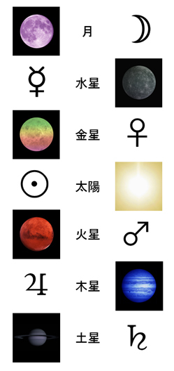

| NOSとNOOSの精神分析 ③ ～オイディプス編～ | |
| 佐道 来夢 | |
| (2018) | |
＊ ＊ はじめに＊ ＊
今回から始まる章のメインテーマは「オイディプス」 である。
「オイディプス」とは、心理学において、フロイトが『オイディプス・コンプレックス』 として扱った、重要概念である。哲学の間でも「ドゥルーズ＝ガタリ」 による『アンチ・オイディプス』 という書籍で追求されているものとして有名である。「オイディプス」の問題は、端的に言うと「父なるもの」を巡る問題であり、幅広い分野に通じている。
しかし、ここから先は、「オイディプス」というテーマが広く色々なことに通じているため、割と幅広い範囲のテーマについて書いて行こうとも思う。
そこで、まず始めに、これまで語ることのできなかった心理学者である「アルフレッド・アドラー」 の話を、軽くしていこうと思う。
筆者の専門は、割と「ユング」と「ラカン」の二人の心理学者のつもりだったが、「アドラー」という心理学者も、今、世の中では割と注目されている様子であるので、それをいくらか押さえつつ、ヌーソロジーの概念とも紐づけていくことにした。
そして、「アドラー」について述べた次は、いよいよ、「オイディプス」についてと、それと現代社会とを絡めた問題についても述べていくことにする。
それから、最後に、「オイディプス」の問題を解決するものとして、「魔術・魔法」 というジャンルについても述べていくことにする。
＊ ＊ アドラーについて軽く＊ ＊
・アドラーとは？
「アルフレッド・アドラー」 （１８７０年〜１９３７年、オーストリア生まれ）は、割と社会派な心理学者として知られている人物であり、ユングと同じく、フロイトの元に集まっていた弟子のうちの一人である。（しかし、弟子という言い方には異論があり、独立した考え方を持った心理学者と言った方が良いみたいである。）
医師として開業をしていたアドラーは、フロイトの著作『夢判断』を呼んで、精神医学に興味を持ち、フロイトと行動を共にするようになるが、やはり、ユングと同様に、「リビドー」や「性的要因」の問題に全ての精神病に結びつけようとするフロイトの考え方に意義を唱えるようになって、精神分析学会を退会し、独立することになる。
また、アドラーはフロイトと同じく「ユダヤ人」であるという、人種的な繋がりがある。しかし、フロイトは割とユダヤ教よりも科学に傾倒していたものの、ユダヤ人らしいこだわりのある性格であったが、アドラーはユダヤ教からキリスト教プロテスタントに改宗しているため、ユダヤ人としてのこだわりはさほど強くはない性格であったと言える。フロイトのような発想はひたすら真理追及をするのに向いているが、アドラーのようユダヤ人としてのこだわりはさほど強くはない性格であったと言える。フロイトのような発想はひたすら真理追及をするのに向いているが、アドラーのようなキリスト教プロテスタント的な発想は割と大衆受けしやすい。このあたりの違いも、話が合わなかった理由として察することができる。なキリスト教プロテスタント的な発想は割と大衆受けしやすい。このあたりの違いも、話が合わなかった理由として察することができる。
このように、フロイトの元を離れていったアドラーであるが、その時の主張を端的に言うと「精神病の原因となるものは、リビドーのような性的要因ではなく、『劣等感』である。」 というものだった。アドラーは身体的なハンディキャップが作る劣等性に関心を持っており、自身も幼い頃は病弱で自由な動きができなかった経験を持つため、このような独自の考えを持っていた。
フロイトからの独立以降、アドラーは自身の心理学を『個人心理学』 と呼んで掘り下げるようになり、自分の築き上げたものが社会に役立つようにと、様々な持論を展開して活躍するようになる。
アドラーは、フロイトやユングと比べると、「社会をどう変えるか」ということに積極的な関心を持つ、社会派な心理学者であったと言える人物であった。そうした社会派な性格を持つアドラーは、社会主義に関心を持っていたこともあり、はじめは政治の分野から社会を変えることに関心があったが、次第にその現実に幻滅するようになって、政治的アプローチはやめるようになり、そこから、育児や教育の分野に関心を持ったため、その辺りで活躍するようになる。
このように、アドラーは社会を通じて積極的な活動をしていたわけであり、その主張に影響を受けた人物というのもいる。有名所では、自己啓発のベストセラーを書いた「デール・カーネギー」などがアドラーの言葉を引用している。それから、「アルバート・エリス」という人物が『論理療法』というのを提唱しているが、これもアドラーの影響を受けている。
このような活躍を見せていたアドラーだが、アドラーはユングやフロイトやラカンのように、無意識に徹底的に向き合い、その仕組みを掘り下げていくような、生々しい魅力には欠けるかもしれない。しかし、社会との関わり方という善良な分野について追求していた心理学者として、重要人物であるのがアドラーだと思う。
・「岸見一郎」さんなどの影響
日本のアドラー研究者として「岸見一郎」 という人がいる。その人の著書の『アドラー心理学入門』 でも、アドラーについては「日本ではフロイトやユングの名前はよく知られていますが、同じ時代に生きたオーストリアの精神科医であるアルフレッド・アドラーの名前はあまり知られていません」と書いてあった（恐らく、１９９９年頃の話である）。このように、確かにメジャーではないと思われていたアドラーであったが、しかし、この人の本ではその魅力がよく伝えられており、いつのまにか流行ったりもするようにもなっていった。
岸見一郎さんの著書『アドラー心理学入門』から派生して、『嫌われる勇気』 といった本も２０１３年頃に出るようになった（さらには、『嫌われる勇気』を原案にしたテレビドラマまで、２０１７年に出てきたらしい）。こうした本がヒットすることになり、アドラーの流行にプッシュがかかっていった。
従って、アドラーについて詳しく学びたい場合も、まずはそれらの本がオススメだと思う。
・「劣等感」について
さて、ここで早速、アドラー心理学の内容に入っていこうと思う。
アドラーの心理学の主題となるのは「劣等感」 に対する考え方である。
「劣等感」・・・人間は普通に生きていると、能力にせよ、富にせよ、生きるのに有利なものを「持っている者」と「持っていない者」が目につくようになる。そうした中で、社会的に有利な者は「優等」として扱われ、逆に、不利なものは「劣等」として扱われることになる。
特に、生まれつきの病気か何かで身体的な不自由を持っている人に焦点を当てると、そこで不自由している人にとっては、不自由なく生きている人と比べて、どうしても「劣等感」を感じざるをえないものである。そこまで極端な状況ではないとしても、身体的な有利・不利という要素から、能力の格差というものが生じることもあるため、そこから出てくる「劣等感」というのもある。
このようなことから生じる「劣等感」が全ての「精神病」の原因になる・・・かどうかは、どこまでは言えるかどうか分からないにせよ、そうした悩みが問題の起因となるということがあるわけである。
そして、ヌーソロジー的には、こうした「劣等感」はどこに位置づけられるのだろうか？ やはり、これも『ケイブコンパス』に組み込んで説明することができる。

図の左側にある『偶数系元止揚』は、「物質世界」のようなものにあたるわけだが、社会的な充実・物質的な充実といったものを持っている者は、主にそちら側に従事している者である。また、『偶数系元止揚』は「他者」を先手とする意識を持っているため、意識の方向性をそちら側に向けるということは、「他者の要求に答え続ける」ということに従事するのと同義である。従って、そちら側に落ち着いている者の方が、一般的には「優性」 という扱いになる。
一方で、『奇数系元止揚』は、「精神世界」のようなものにあたるわけだが、これは「精神的な充実」をもたらすことはあるものの、物質的な充実とは相反するものである。従って、そちら側に落ち着いている者は、社会や学校といった場所においては、必然的に「劣性」 という扱いになる。また、『奇数系元止揚』は「自己」を先手とする意識を持っているため、「他者」の言うことは気にしないものである。従って、他者にとっては「劣性」という扱いになる。
他者の言うことを気にすると出てくるのが「劣等感」・・・そもそも、「優性」か「劣性」という価値判断が出てくるのは、『偶数系元止揚』側において起きること であり、「物質世界」にある決まった基準があり、その基準に従って「優性」・・・という扱いになるわけだが、その発想自体が『奇数系元止揚』側からしたらおかしなことであり、そもそも、奇数側からしてみれば「自己」を先手として「自分は自分らしく」していれば良いだけなので、「優性」か「劣性」かという風に分けるという発想すら出てこないものなのである。そこで、価値基準を『偶数系元止揚』側に持っていってしまうから、「劣等感」というものが生まれてくるのである。従って、「優性」か「劣性」かにこだわるという考え方自体が、「他者優位」の考え方・・・つまり、『偶数系元止揚』側が生み出しているのである。
『偶数系元止揚』は、ユングにおいては「ペルソナ」、ラカンにおいては「想像的自我」が主動となっている世界が当てはまるが、要は、そちら側を優位にする発想が、そもそもの「優性」か「劣性」かという価値基準を生み出しており、「劣等感」を生み出しているというわけである。
また、アドラーは、「人間の悩みは人間関係から生じるものである。」という、もっともらしいことを言っていたが、これも、ヌーソロジー的には『奇数系元止揚』と『偶数系元止揚』との関わり方の問題だと捉えることができる。この双方の関わり方の問題は、突き詰めると「自己」と「他者」との関わり方の問題でもある。
つまり、フロイトもユングもラカンもアドラーも、ヌーソロジーの『ケイブコンパス』を使って解釈してみると、通じている所が見つかるのである。
・「劣等性」と「差異」とについて
アドラーの言った「劣等感」についてもう一つ言えることとして、これは、「同一性」 と「差異」 の関係とも絡んでいる問題でもある。
「同一性」と「差異」とは、ヌーソロジーでも使われている、哲学の用語であるが、「同一性」は「何かと何かを同じとして見る性質」 のことを言う。対人関係においては、「誰かと誰かを同じとして見る性質」と言っても良いと思う。その一方で、「差異」は「同一性」と逆の意味であり、そこにある「違い」 のことを言っている。
アドラーの言う「劣等感」が生まれる背景には、そもそも、「同一性」という人間が誰しも持っている性質がある。人間社会でよくあることとしては、まず、「優越者」のモデルというのがある。例えば、学校の成績が良い者、運動ができる者、良い大学に言って良い企業に就職してお金を多く稼ぐ者・・・などがその代表といった所だろう。そうなってくると、「人間はそのモデルと同一になれるものなのだ。」 という価値観が出てくるようになり、皆がそれを目指すようになる。そこで本当は身体的なハンディや、違いによる得手不得手が存在するのだが、「同一性」が働いている場合はそうしたものは無視される。そして、そのモデルに真似するのに不利であり、実際にできない者を「劣等者」だと扱うようになる。
しかし、そもそも人間には「差異」があるものだ という前提に気づいていれば、このようなことは起きないものである。身体的に違いがあるのだから、モデルを真似できない者がいるのも当たり前である。このように、それが当たり前であるとした上で、世の中に役立つためには何をすれば良いか？ 世間では不利のように扱われているけれど・・・世間で言われている有利さなどは、実は本当に良いのか怪しいものなので・・・自分の得意分野として力が発揮できて、世の中の役にも立つものとは何なのか？というのを、「劣等感」に悩むことなく突き詰めることができる。これが「差異」の考え方の理想である。
このように、「劣等感」の克服は、「誰かと誰か」や「自己と他者」の「差異」に気付くこと でもある。
また、そうしたことを突き詰めて世の中を見てみると、「同一性」にまみれた「優越者」のモデルというものも、意外と脆くてあこがれるのが正しいというわけでもない・・・ということが分かってきたりする。
従って、自分なりのやり方で、自分の長所を引き出していき、それをもってして世の中の役に立っていれば、劣等感に悩む必要は無いのである。
・「共同体精神」について
次に、アドラーが提唱していた「共同体精神」 という概念についてである。これも、アドラー心理学において重要なものとなっている。
まず、一般的な「共同体」 というと、「家族」であったり、「世間」であったり、「社会」であったり、「国家」であったり・・・と、割と身近に感じるもののことを指すと思われる。
しかし、アドラーの言う「共同体」 とは、もっと壮大なものであるらしい。「社会」や「国家」もそれに該当するが、他にも「民族」だったり、「人類」だったり、さらには「自然」だったり「宇宙」だったり・・・と、そういうもののことを指すようである。ヌーソロジーをやっていると、そうした概念にもなじみが深いようになるが、恐らく、それに近いものなのではないか？と思う。
ここで、ヌーソロジー的に解釈してみると、単純に「共同体」と言うと、『中和』側のものと『等化』側のものがある と捉えることができる。基本的には「集団」 というものは、多くの「他者」で構成されているものであり、「他者」を先手とする『中和』側のもの である。
しかし、そこで「自己」を先手として能動的に「集団」と関わる ことによって、それは『等化』側のものとして機能する ようになる。アドラーが言いたかったものも、間違いなく『等化』側の「共同体」を意味する「共同体精神」 である。
このように、『等化』側として「共同体」と接することで、単に「生活のため」とか「お金のため」とかで「共同体」の中で過ごすのではなく、もっと先のビジョンである、「人々のため」とか「後世のため」とか「宇宙のため」・・・といった動機を持ち、誰かから言われたからそれをするというわけでもなく、それが自然であるかのような態度で、自分の役割を果たしていくことができる。恐らく、これがアドラーの理想としている「社会との関わり方」だと思う。
・「共同体精神」にある階層構造
以上のようにアドラーが言っていた「共同体精神」であるが、ヌーソロジー的にこれを掘り下げると、そこには「階層構造」 があるのかもしれない？と解釈することができる。
ヌーソロジー的に捉えた「共同体」は、『偶数系元止揚』の仕組みを考えると、以下のような階層構造があることが考えられる。

ψ ２： 未発達レベル
空間の認知、道具の扱いを行っているのみ
ψ ４： 客体レベル
複数の「客体」、コミュニティとの関わり
ψ ６： 他者レベル
複数の「他者」、組織、多くのコミュニティとの関わり
ψ ８： 概念レベル
「貨幣」「法律」「科学」などの概念、多くの組織との関わり
以上の構造を簡単に説明すると、「共同体」の開始は「客体レベル」から始まるとして、「客体」→「他者（多くの客体が集まってできたもの）」→「概念」という風に、より大きな枠組みとしての「共同体」が発展していくということである。
以上の構造は、『ユング精神分析編』 の所で説明した「ペルソナ」の持つ階層構造や、「集合無意識」の階層構造ともリンクしているというわけである。
社会的な関わりを重要視したアドラーの心理学は、非常に実用的で分かりやすいものであるが、やはり、構造を深く掘り下げることや、得体の知れない分野にまで言及することに関しては、ラカンやユングの方が強かったのかもしれない。
・能動的に生きるということについて
アドラーの言っていたことは、以上で書いていった他にも色々とあるが、基本的には「能動的に生きること」 に通じている。
それは、ヌーソロジーの『ケイブコンパス』でいうと、『奇数系元止揚』を始めとして『奇数系の観察子（ＮＯＯＳ）』を先手とすること
でもあり、それは、「自己」を先手として生きること
でもある。そして、そこから「他者」や「社会」と関わり合って生きるということである。ヌーソロジー的に言えるそれは、アドラーの言っていた「能動的に生きる」ということと、同義だと言っても良いと思う。

先ほども説明した通り、『ケイブコンパス』にある『奇数系元止揚』の所は、『偶数系元止揚』にとって、普段は「劣性」になりやすい分野なのであるが、それでも重要なことは、そちら側を先手として、能動的に生きる ということである。アドラーの言っていたことは、大体はそこに通じており、そうしたことを訴えるために、育児や教育という分野で活動していたアドラーは、よく「勇気づけ」 というのを行っていた。

アドラーが行っていた「勇気づけ」は、ヌーソロジー的に言うと「自己を先手として生きるため」の勇気づけであり、それは「能動的に生きるため」の勇気づけだと言うこともできる。
そうしたことを「人を育てる」という分野の現場で実践していたことに、アドラーの魅力があると思う。
＊ ＊ オイディプスについて＊ ＊
・「オイディプス」とは何か？
さて、いよいよ今回の『オイディプス編』 のメインテーマとなる「オイディプス」について である。
まずは、「オイディプス」とは何か？についてだが、これは、元々は古代ギリシャの紀元前４２７年頃に書かれた『オイディプス王』 と呼ばれる神話から来ている名前である。（読み方の問題で、「エディプス王」 と呼ばれることもある。）
その神話の内容から、フロイトが『オイディプス・コンプレックス』 というものを提唱するようになる。（これは、よく「エディプス・コンプレックス」 と呼ばれることもあるが、ここでは「オイディプス」に統一することにする。）
このフロイトが言った「オイディプス・コンプレックス」の問題を、後にラカンやドゥルーズといった人物が取り上げて、そこからさらに発想が広がっていくようになる。特にドゥルーズにおいては、「オイディプス」は全く違った概念として扱われるようになる。
ここで、それらについてそれぞれ説明していくことにする。
・神話「オイディプス王」の内容
まずは、「オイディプス」という言葉の大元である、「オイディプス王」という神話の内容について、ここで説明していくことにするが・・・これは、わざわざ自分の口から説明する必要はない・・・と思ったため、Wikipediaから引用したものをここにそのまま記載することにする。
〜誕生〜
『ラーイオス』
は神から子供を作るべきではないとの神託を受けた。神託によると、もし子供を作ればその子供がラーイオスを殺すというのである。しかしラーイオスは酔ったおりに妻『イオカステー』
と交わり、男児をもうけた。
神託を恐れたラーイオスは、男児を殺そうと考えたが殺すには忍びなく、男児の踵をブローチで刺し、従者に男児を渡してキタイローンの山中に置き去りにするよう命じた。
しかし従者もまた男児を殺すには忍びないと考えたため、従者はキタイローンの山中にいた羊飼いに渡し、遠くへ連れ去るように頼んだ。コリントス王ポリュボスとその妻メロペー（異説ではペリボイア、メドゥーサとも）が子供が生まれなくて困っていたため、羊飼いは男児を二人に渡した。
ブローチで刺された男児の踵が腫れていた為、ポリュボスとメロペーは男児を『オイディプス（腫れた足）』 と名づけた。
〜旅立ち〜
成長したオイディプスは、他のものよりも勝っていたため、これを嫉んだ者達は酒席で、オイディプスはポリュボスとメロペーの間の実子ではないと中傷した。疑いながらも不安に思った彼はポリュボスとメロペーとに詰問したが、満足のいく回答が得られず、この為オイディプスは、自分がポリュボスとメロペーとの実子であるかを神々に聞くため、デルポイでアポローンの神託を受けた。しかしアポローンは彼の問いに答えず、代わりに別の神託をオイディプスに与えた。
神託はオイディプスに、「故郷に近寄るな、両親を殺すであろうから」と教えた。ポリュボスとメロペーとを実の両親と信じる彼はコリントスを離れ、旅に出た。
〜父殺し〜
戦車に乗って旅をしている最中、ポーキスの三叉路に差し掛かったところで、前から戦車に乗ったラーイオスがあらわれた。ポリュポンテースというラーイオスの従者が、オイディプスに道を譲るよう命令し、これに従わぬのをみるや彼の馬を殺した。これに怒ったオイディプスはポリュポンテースとラーイオスを殺した（殺害方法には、打ち殺したという説と谷底に突き落としたという説がある）。
ラーイオスが名乗らなかった為、オイディプスは自分が殺した相手が誰であるかを知らなかった。ラーイオスはプライタイアイ王ダマシストラトスが埋葬し、彼亡き後のテーバイは、メノイケオスの子クレオーンが摂政として治めた。
〜スフィンクス退治〜
オイディプスはポーキスの三叉路から逃げてテーバイへと向かった。この頃テーバイではヘーラーにより送られたスピンクス（スフィンクス）という怪物に悩まされていた。
スフィンクスはオルトロスを父とし、エキドナを母とする怪物で、女面にして、胸と脚と尾は獅子で、鳥の羽を持っていた。スフィンクスはムーサより謎を教わって、ピーキオン山頂に座し、そこを通るものに謎を出して、謎が解けぬ者を喰らっていた。
この謎は「一つの声をもちながら、朝には四つ足、昼には二本足、夜には三つ足で歩くものは何か。その生き物は全ての生き物の中で最も姿を変える」というものであった。
この謎が解かれた時スフィンクスの災いから解放されるであろうという神託をテーバイ人達は得ていた為、この謎を解くべく知恵を絞ったが何人も解く事は出来ず、多くの者がスフィンクスに殺された（一説によるとクレオーンの子ハイモーンもまたスフィンクスに殺された）。この為クレオーンは、この謎を解いた者にテーバイの街とイオカステーを与えるという布告を出した。
テーバイに来たオイディプスはこの謎を解き、スフィンクスに言った。
「答えは人間である。何となれば人間は幼年期には四つ足で歩き、青年期には二本足で歩き、老いては杖をついて三つ足で歩くからである（注： スフィンクスの問いの答えは「オイディプス」であるという穿った異説もある。）」
謎を解かれたスフィンクスは自ら城山より身を投じて死んだ。これは謎が解かれた場合死ぬであろうという予言があったためである（悔しさのあまり身を投じたという異説もある）。
〜デーバイ王となり、母と交わる〜
スフィンクスを倒したオイディプスは、テーバイの王となった。そして実の母であるイオカステーを、母であるとは知らずに娶って二人の男児と二人の女児をもうけた。二人の男児はそれぞれエテオクレースとポリュネイケースといい、二人の女児はそれぞれアンティゴネーとイスメーネーという。
〜真実を知る〜
オイディプスがテーバイの王になって以来不作と疫病が続いた。クレオーンがデルポイに神託を求めた所、不作と疫病はラーイオス殺害の穢れの為であるので殺害者を捕らえ、テーバイから追放せよという神託を得た。
オイディプスはそこで過去に遡って調べを進めるが、次第に、そのあらましが自分がこの地に来たときのいざこざに似ていることに気が付く。さらに調べを進めるうち、やはりそれが自分であること、しかも自分がライオース王の子であったこと、母との間に子をもうけたこと、つまり以前の神託を実現してしまったことを知る。それを知るやイオカステーは自殺し、彼は絶望して自らの目をえぐり追放された（娘と共に放浪の旅に出て行ったという説もある）。
・・・以上が、有名な神話「オイディプス王」の内容である。
この神話でメインとなる登場人物は、父「ラーイオス」 、母「イスカリオテー」 、そして、子「オイディプス」 の三人である。その中で、主役である「オイディプス」自体は、どちらかというと可哀想な者と受け取ることができる内容である。
しかし、フロイトによってこの神話が解釈されることにより、この「オイディプス」という名前は、別物のような概念として扱われるようになる。
・「オイディプス王の神話」から「オイディプス・コンプレックス」へ
このように、紀元前５世紀頃の古代ギリシャにあった神話を、19 世紀から20 世紀にかけての近代にて、フロイトという精神分析家が引き出すことになるわけだが、そこで、当時のフロイトが考えていた「人間は誰しも幼児の頃から性欲を持っている」という独自の思想と、この「オイディプス王」の神話が紐づけられて解釈されるようになった。また、そこで生まれた発想は、フロイト自身の父親が亡くなった時、自身が母親と近親相姦する夢を見たという、半ば天啓とも呼べるような衝撃的な出来事にも恐らく起因している。
フロイトは、オイディプス王の神話の中で、「子が父を殺し、母を犯す」 という所をピックアップするようになり、それは人間の持っている「性的な欲求」に起因して、精神分析においても見られることだと解釈したのである。
それらのことから導き出される「オイディプス・コンプレックス」の内容は、要約すると、以下のようになる。
まず、人間は誰しも幼児の頃から「幼児性欲」というものを持っている。 そこで、子供は（男の子の場合）「母親と交わりたい」 と願うようになる。しかし、「父親」によってそれは邪魔される ようになる。それと同時に、「父親」は自身にとって自分が理想とする憧れの対象でもあり、絶対的な存在でもある。そこで、子供はそうしたことから起きる葛藤から逃れるために、近親相姦する欲求を諦め、父親と対立することも諦めて、一人立ちする ようになる。そうした中で、こうした幼児的な欲求は、無意識に抑圧されるようになり、表に出ないようになる。このようなことから生まれる「複合感情（コンプレックス）」が『オイディプス・コンプレックス』 である。
・・・以上が「オイディプス・コンプレックス」の簡単な概要である。ここでは男の子の場合を取り上げたが、女の子の場合は、父親を欲求の対象とし、母親を敵対の対象とすることになるらしい。
また、フロイトはヒステリー（神経症）や精神病の研究の中でこうした概念を打ち出したので、ヒステリー患者は、こうした出来事を無意識に抑圧しているのを背景にして、症状が発生している・・・などという風に解釈される。
・・・と、ここまで、あくまでフロイトの見解に該当するものを述べてきたが、これは発想が異端すぎるとも解釈できる説であり、当然、フロイトのこうした説は、異論や物議をかもしたものであり、特にユングなんかもこれについては、精神病の原因の一つに過ぎない という見解を示していたわけである。しかし、フロイトの言ったこうした極端な主張は、良くも悪くも、後世の人に大きな影響を及ぼすことになったわけである。
さて、筆者自身も、このフロイト個人の説には異論があるわけだが・・・まず、ここで言われている「父」と「母」と「子」といった人物は、「オイディプス王」という神話の中で出てきたものが元となっており、あくまで「比喩」のようなものなので、ここで出てくる三者は神話の人物であり、概念のようなもの だと捉えた方が良い。
それから、フロイトの後に出てきた精神分析家である「ラカン」が、フロイトの「オイディプス・コンプレックス」を新たに掘り下げたことで有名なわけだが、そこに関しては『ラカンの精神分析編』 で書いた、「ファルス」や「父の名」といった概念を再度、ここで思い出して欲しい。フロイトは母親と子供の関係を「近親相姦」の関係かのように言ってしまっていたが、ラカンの場合は、「子供が母親の欲求を受けて、万能感を感じるもの（ファルス）」 という風に解釈しているため、こちらの方がいくらか納得しやすいと思う。加えて、ラカンはこうした概念を、もっと理論的に、構造的な問題のようにして構築しなおしたというわけである。
・著書「アンチ・オイディプス」について
フロイトの「オイディプス・コンプレックス」の問題は、精神分析の界隈だけでなく、哲学者も言及するようになる。
そこで有名なのが、哲学者「ジル・ドゥルーズ」 と、精神分析家の「フェリックス・ガタリ」 の二人がユニットを組んで、「ドゥルーズ＝ガタリ」 として書いた『アンチ・オイディプス』 という著書である。（ちなみに、この『アンチ・オイディプス』は、「ヌーソロジー」でも引用されるものであり、半田広宣さんの愛読書の一つである。）
この『アンチ・オイディプス』は、「オイディプス・コンプレックス」について言及しているだけでなく、フロイトが作り上げた「精神分析」というジャンルから派生した産物であるとも言える。
この『アンチ・オイディプス』という著書は、以下のような文章から始まる。
《それ》はいたるところで機能している。中断することなく、あるいは断続的に。《それ》は呼吸し、過熱し、食べる。《それ》は排便し、愛撫する。《それ》と呼んでしまったことは、何という誤りだろう。いたるところに機械があるのだ。
・・・以上の文章において、《それ》と呼ばれているものは、フロイトの言った「エス」に該当する。「エス」とは、無意識にあるものであり、同時に、人間の欲望の起因となっている場でもある。このように、「アンチ・オイディプス」という著書は、「人間の欲望」について、『機械』 という独自の概念を用いて掘り下げているのである。
・「アンチ・オイディプス」における「オイディプス」とは？
このような『アンチ・オイディプス』は、簡単に言うと、どういうことを言っている著書なのか？
まず、この著書は、『機械』という概念を提唱し、それを「エス」の持つ「欲望」とを絡めた『欲望機械』 という概念にして、この「欲望機械」について考えていっている・・・この辺は、説明すると長くなる所なので、本書では省略するとして・・・重要な箇所として「オイディプス・コンプレックス」と絡む所についてのみ、本書では書いていくことにする。
『アンチ・オイディプス』は、フロイトの「オイディプス・コンプレックス」の言説を批判した本でもある。ドゥルーズ＝ガタリは、「オイディプス」や、それを生み出す「欲望機械」という概念について、「人間社会が生まれる構造」や「資本主義」という、もっと壮大なフレームを使って捉えていて、それを「欲望」が持つ『流れ』 という性質や、「機械」が持つ『切断』 という機能など、独自の用語を用いつつ説明していた。しかしながら、フロイトはこの「欲望」についてを「父親」と「母親」と「子供」という、家庭内の三角関係に落とし込んでしまった・・・と言う。
要は、ドゥルーズ＝ガタリによると、人間の「欲望」はもっと壮大なフレームで捉えられる概念 だが、フロイトは「性的欲求」と「家庭内の関係」という、身近なフレームで捉えてしまった ということに対して批判したのである。
こうした中で『アンチ・オイディプス』における「オイディプス」という言葉の意味は、元の意味とも違った特別なものとして扱われている。
以下、「オイディプス」という用語が出てくる箇所を、著書からいくらかを引用する。
・「オイディプス」は、欲望機械のとてつもない抑圧を前提として成立しているのだ。
・教義としての、つまり「核をなすコンプレックス」としてのオイディプスの機能は、ある無理強いと切り離せないものであり、この無理強いによって、精神分析の理論家は、オイディプスが普遍的であるとする立場に到達する。
・オイディプスは資本主義のシステムにおいて、第一の次元の社会的イメージが、第二の次元の私的家族的イメージに適合することから生まれてくる。オイディプスは到達点の集合であり、これは社会的に規定された出発点の集合に対応する。オイディプスは、私たちの内に秘められた植民地的組織体であり、オイディプスが私たちを植民地化するのである。
・結局オイディプス・・・・・・、これはとどのつまり、非常に単純な操作であり、じっさいに容易に定式化しうるものである。
・・・引用は以上であるが、やはり、著書『アンチ・オイディプス』は難解であることでよく知られており、この著書における「オイディプス」の意味は、非常に難しいものとなっている。著書名が『アンチ・オイディプス』なのにも関わらず、一番理解の難しい概念が「オイディプス」なのではないか？と思うぐらいである。
しかし、ここでは簡潔に「オイディプス」という概念について説明をする。まず、ドゥルーズ＝ガタリは「欲望機械」という概念を提唱している。それから、この「欲望機械」から派生して生じるものが「オイディプス」 と言っている。これは、フロイトが言った「リビドー」から「オイディプス・コンプレックス」が生じるということともリンクしているということになる。そして、ドゥルーズ＝ガタリの言った「欲望機械」とは、人間が社会を形成していくにおいて、非常に広範囲の物事と絡んでいるものである。それは、社会構造の発展の終着点である「資本主義」 とも絡んでいると言う。従って、ドゥルーズ＝ガタリの言う「オイディプス」とは、非常に広範囲の物事の中に潜んでおり、資本主義というシステムの中にも潜んでいる・・・ということになる。
このように汎用性の高い「オイディプス」という言葉の意味は、あらゆる「父」と「母」と「子」にあたる概念の三角関係から生じるもの ・・・と捉えても良いと思う。
ドゥルーズ＝ガタリは、この中の「父」に対して、実際の父親、言語構造、象徴的関係、社会構造、資本主義のシステム・・・など、ありとあらゆるものを「父なるもの」のように扱っていたため、「オイディプス」は、そうしたあらゆる「父なるものによって起きた弊害」 のように解釈することができるものとなっている。
従って、ドゥルーズ＝ガタリが提唱したものとしての「オイディプス」という意味は、幅広く解釈することができるものとなっていて、「神の思想の弊害」、「道徳の弊害」、「社会システムの弊害」・・・のような意味とも捉えることができるし、「創造すること」と「創造することによって生まれる弊害」でも、大体の意味は通じると思う。
■「父性原理」と「母性原理」
・「父なるもの」と「西洋」の関係
これまでの「オイディプス」の説明では、つまり、『アンチ・オイディプス』的な「オイディプス」は、ありとあらゆる「父なるもの」が発端となっており、それとの関係が上手くいかなくなった時に起きる・・・というのが、「オイディプス」を巡るストーリーである。これは本来の「オイディプス王」の神話の内容とは大分異なっているが、ここではそういうものとして扱おうと思う。
ここで、「父なるもの」は「父性原理」として、「父性原理」と「母性原理」の二つ について、今一度、掘り下げていこうと思う。
ユング派のカウンセラーとして有名な、河合隼雄さんによる「父性原理」と「母性原理」の説明を再度復習すると、以下のようになる。
通説では、「父性原理」は西洋諸国 においてよく見られ、「母性原理」は東洋諸国 においてよく見られる。
そして、「精神分析」というジャンルは、当然、西洋から出てきたものであり、それはフロイトという人物によって始められたが、そのフロイトは執拗なまでに「オイディプス・コンプレックス」というものと、「父との関係」というテーマにこだわっていた。ここで「父」に該当するものは、恐らく、肉親としての「父親」のみを指しているのではない。フロイトはユダヤ人であったため、ユダヤ人にとっての「父」とは、あの「ユダヤ教の神様」が挙げられるものでもある。
それから、西洋人にとっての「父」は、ユダヤ教の神様だけではない。西洋諸国というと、科学技術の発展が著しかった国々であり、特に19 世紀や20 世紀にかけては、産業革命による勢いが強かった時代である。・・・フロイトは熱心なユダヤ教徒と言うよりは、「科学的な視点」で物事を見ることにこだわっていた人物であるため、フロイトが「父」とするものは、どちらかというとそうしたものかもしれない・・・つまり、西洋にある屈強な科学技術や、政治のシステムなどを作り上げた、「近代理性」という「父」 である。
「西洋」は、科学の発祥の場所であり、それから、西洋で普及している「キリスト教」や、一部の優秀な人間が信じる「ユダヤ教」は、一神教の宗教であるため、そうした一神教的なものが支配している文化 を持つのである。従って、そうした「父」が生み出すものが、広い意味での「オイディプス・コンプレックス」だということが言える。
フロイトは肉親である父親を指しての「父」を言及して「オイディプス・コンプレックス」を提唱していたかのようであったが、ドゥルーズ＝ガタリは、それをもっと普遍的なものとして拡張したため、ここでの「オイディプス」は、かなり広い意味のものを指すようになった。そもそも、フロイトが言いたかったことも、西洋人が持つ特有の「父性」を問題にしていたのではないか？と思う。
・ヌーソロジーにおける「思形と感性」
さて、ここでまたヌーソロジーの『ケイブコンパス』を用いて、「父性原理」と「母性原理」の問題を捉えることにする。
『ケイブコンパス』の外側には、『思形』と『感性』という対となる二組がある。この二つは、お互いを補完するように機能していると捉えてもらって良い。
この二つにとって、本来、進化の方向性を持っている『ノウス（ＮＯＯＳ）』にあたるのは、『思形』である。
まず、『感性』が『ノス（ＮＯＳ）』として、惰性のように機能することから始まるが、そこで、その働きを止めるように機能するのが『思形』の役割である。これは、ラカンが言っていたように、「ファルス」となった「母」の欲求を「子」がそのまま受けて、「子」が万能感を感じるだけで閉じた関係を作るという「想像的関係」と、それを去勢して止めるという「父の名」の機能が、それぞれ『感性』と『思形』に当てはまると捉えてもらって良い。
しかし、「人間の世界」ができあがって来るようになると、問題は変わってくるようになる。ラカンの言う「父の名」とほぼ等しい『思形』は、社会においては「法」や「言語」として機能するようになり、「子の欲望」が縛り上げられるようになるが、今度はそこで弊害が生まれるようになる・・・これが、西洋で言う所の「近代理性」によって生じる問題でもあり、その弊害が「オイディプス」だというわけである。
ヌーソロジーの『ケイブコンパス』においては、『思形』は、『偶数系元止揚』を裏で支えるように機能している。

この『偶数系元止揚』は、「物質主義的な人間の自我」と言えるようなものであり、『思形』がそれを支えるようになると、そこから弊害が出てくるようになる。この時、ヌーソロジーにおいて『反定質』と呼ばれるものが強く作用するようになり、『中和』側である「偶数先手」という状況が、問題を引き起こすようになる。
この状況を止めるものは何にあたるのか？ それは、『偶数系元止揚』とは逆に位置する『奇数系元止揚』であり、その背後を『感性』が支えている。そして、『感性』は「母性原理」に該当するものである。つまり、「父なるもの」が猛威となった時、今度は「母なるもの」に対して救いが求められるということである。
・「母なるもの」と「東洋」の関係
以上、「父性原理」と「西洋」について述べてきたが、今度は「母性原理」と「東洋」について述べていくことにする。
西洋が「父なるもの」との関係が深い一方で、東洋は「母なるもの」 との関係が深い。
それは、『ケイブコンパス』でいうと、『感性』に該当するものである。

フロイトは『思形』にあたる「父」側に対して主に関心を持っていたが、フロイトと決別した「ユング」は、どちらかというと「母」側に関心を寄せていた様子である。
ユングの言った「元型」の中に「大母（グレートマザー）」というものがあるが、これは、「全てを生み出す性質」を持つ一方で、「全てを呑み込む性質」というのも持っている。人々を豊かにする一面を持っている一方で、恐ろしい一面も持っているものである。
また、「母なるもの」が持つ力というと、ラカンの「ファルス」の話にも現れている。「母なるもの」は、子供を「母の欲求」に答えてくれる存在と同一視し、そして、子供はそれと同一化する。しかし、それは「大母（グレートマザー）」のように、精神的な豊かさと万能感を与えてくれる一方で、全てを呑み込む性質を持つという、二面性を持っている。従って、子供はそこで万能感を維持したいという欲求を持つ一方で、虚無感や虚偽心を持つようにもなる。

それから、日本人が提唱した概念で『阿闍世（アジャセ）コンプレックス』 というのがある。これは、「古澤平作」という人が創唱し、「小此木啓吾」という人が広く流布させた精神分析の概念であり、「母親」と「子供」との関係から起きるコンプレックスについて言及したものである。古澤平作という人はフロイトがいた時代に生きていた人物なため、フロイトと直接合っており、この概念についての論文をフロイトに提出したりしている。
日本は西洋と比べて「母なるもの」との関わりが深い。ここで、「母なるもの」とは、我々が住む「場」の全体を包み込むようなもの である。日本人が集まって「場」を形成するとき、それは「許し合い」を前提とするような、特有の「場」が作られる。この「許し合い」は、日本人の持つ「母性」の力から来ており、日本人はこうした力をお互いに発揮していく中で生活しており、そこで作られる「場」は独特の力を持っている。
こうした「場」とは、ある時は友人同士で過ごす「場」であったり、ある時は会社という「場」であったり、ある時は学校という「場」であったり、ある時は社会全体を覆っている「場」であったりする。日本人にとっては、人々がとある「場」にいるかいないかという問題は、人々が「個人」としてどういう能力を持っているかよりも重要視される。
日本人が持つ、こうした「場」に依存する性質が「平等信仰」 というものを生み出している。例えば、「学校」という場では、あたかもそこに所属する個人は平等に能力を持っているかのように扱われる。成績の良いもの悪いもの、運動のできるものできないものと色々といるが、その「優劣」は漠然として「皆、平等な存在である」ということが前提になり、そもそもの能力差の問題はタブー視される。また、「不登校」という問題が発生した場合でも、「個人の能力」を考慮した問題としてそれを扱うことに難しさを感じる大人は多く、「場」を重んじる日本人は、学校という「場」から人が離れるということをとにかく問題視したがる。
このように、日本人が重んじる「場」を支配しているものが、ここで言う「母なるもの」 だという風に捉えて欲しい。こうした「母なるもの」は、あらゆるものを包み込んで、全体を「和」に導いたり、育んだりすることもあるが、それと同時に、全体を負の方向へと呑み込んで行くような性質も持ち合わせている。
このような「母なるもの」は、東洋諸国において重要視される傾向にあるわけである。東洋の国というのは、全体的に「多神教」の国が多く、精神的な面において、「個人」よりも「全体」の心情 に対して重きを置く傾向を持っている。その「全体」の対象となるものは「自然」だったり、土着由来の「神様」だったりする。インドあたりは特別に宗教色が強い国であるし、中国あたりは「自然」や「全体」を重んじるような文化が庶民の中に見られたりする。 日本においても、西洋由来の思想がそこまで入り込んでいない場所・・・特に、日本の田舎などは、何か漠然とした「全体の総意」を重んじるという特徴があると思うし、一般的な人間関係においても、そうした傾向が見られる。
西洋人、特にユダヤ人は「父性原理」との関わりが深いが、東洋国である日本人は「母性原理」との関わりが深いのである。・・・・・・いや、むしろ、日本は東洋の中でも特別な国であり、西洋的な性質と、東洋的な性質を合わせ持っている国 だったりする。
これについては、次の項目の『「神道」の持つ二面性について』 にて、詳しく説明していこうと思う。
・「神道」の持つ二面性について
「神道」 とは、日本が固有のものとして持っている宗教であるが、これは、世界でもまれにみる特徴を持っていると言って良いぐらい、奥が深い宗教である。
一般的には、「神道」は「多神教」に該当する宗教だと言われている。しかし、「神道」についてよく調べてみると、それはどうもただの多神教ではないということも分かってくるようになる。「神道」の中には、アマテラス神が統治しているような所・・・それから、天皇を崇拝するような風潮・・・があったりする。その点に関して言えば、「神道」はまるで「一神教」かのような性質を持っているのである。つまり、「神道」とは、「一神」的な性質と「多神」的な性質とを含み持った「多神教」 なのである。
そもそも、「神道」という宗教が生み出された発端として、さらには「日本」という国が誕生した発端として、元々は、中東のカナンあたりの地域にいた「ユダヤ人」が、シルクロードを通って、古代に日本列島に移住して来ていて、そこから「神道」が生まれたという噂話もある。・・・以上の話は、あくまで噂話であり、歴史的な事実であるという話ではないのだが・・・ともかく、そう噂されるぐらい、「神道」が一神教的な性質を持っていることは確かなのである。
日本の神道が「一神教」の性質を持っているということ、さらにはユダヤ人の血筋まで持っているという話になると、眉唾物な話になるのだが、しかし、このように捉えると、日本が「アジア唯一の先進国」となれたのも、納得のいく話なのである。そもそも、「先進国」となるには、科学技術を取り入れていき、産業革命が起きながらも、経済成長していく必要があるわけだが、このように科学技術を扱っていくためには、実は「一神教」であることの必要性が大きかったりする。科学技術やそれにともなったシステムが発展している国は、白人が主導権を握っていると同時に、「キリスト教」や「ユダヤ教」といった宗教を主に持っている。白人の扱う「科学」とは、いわば、「統一性のある思想体系」でもあるため、このような「一神教」を持っていると、科学技術に対してもそのように扱うことができ、上手くいくようになるという背景があるのである。あるいは、「一神教」的な要素を持っている方が、科学技術を扱うための「思考能力」がよく育つということもある。従って、日本が「科学技術」を扱う知能を持っていたのは、東洋にありながらも、実は「一神教」的な性質を持っていたからではないか？と言うことができるわけである。
こうした日本の「神道」の性質を、簡単にまとめると以下のようになる。
まず、神道には「アマテラス」的な勢力 と、「スサノオ」的な勢力 がある。前者の勢力は「天津神」 、後者の勢力は「国津神」 とも言われている（前者の「天津神」はユダヤ人の系列だと噂されることがある。後者はどちらかというと土着の文化である）。そこで、「アマテラス」側の方は「一神教」を信じる文化を持っており、「スサノオ」側の方は「多神教」を信じる文化を持っている。このように「アマテラス」的なものと「スサノオ」的なものの側面の二つを持っている日本は、そこでトラブルや問題というのも起きるものであり、それが表現されているのが「日本神話」というものである。そして、最終的には、「アマテラス」側と「スサノオ」側の持つ二つの思想が「和する」ことに、日本という国の目的があるのではないか？と思う。
・「母なるもの」への父性の上書き
このように、「アマテラス」側と「スサノオ」側という二つの側面を持っている日本は、西洋にも東洋にもない複雑な文化を持っているというわけである。
そもそも、日本において、太陽神である「アマテラス」が「女性神」となっているのも、そうした複雑な事情の表れなのではないか？と思う。「太陽神」とは、普通、西洋においては「父性」の象徴となっている。逆に、「多神」や「大地」といったものが「母性」の象徴となるのが、西洋の一般的な考え方である。（日本においては、「イザナギ」と「イザナミ」という二人の神様という始まりもあるが・・・） このような西洋の表現の仕方と、日本の表現の仕方の違いというのも、掘り下げてみると面白いテーマだと思う。
さて、以上のような特徴を持つ「日本」という国であるが、そこではどういった「オイディプス」の問題が発生しやすいと言えるのだろうか？
まず、現代日本においては、西洋と同様に「父性」によって行き詰まりが生じるという側面がいくらかある。これは、現代日本だと、西洋由来の社会システムや、科学的な思考、資本主義といったものができ上がっているから起きる問題である。先ほど『ヌーソロジーにおける「思形と感性」』 で説明したように、西洋から発端した「近代理性」が作り出すような弊害であり、法律・科学・資本主義といったシステムが生み出すものである。

しかし、日本におけるこれは、西洋ほど厳しいものではなく、日本人の性格を持つ我々は、西洋ほどに厳格で機能的なシステムを敷いていくことができない。・・・確かに日本社会でも、大企業による搾取や、ブラック企業の問題などと色々と出ているが、海外の白人社会はそれはそれでどれだけ生きづらいかを調べてみると、その辺の問題は明らかになってくるし、やはり日本企業は日本特有の問題を抱えることが多い。日本はどちらかというと、「東洋人」の持つ性質として、母性的なものが作り出す問題が起きる側面がそれなりに強い。これは、先ほど『「母なるもの」と「東洋」の関係」』 で説明したことである。
しかしながら、現代においてはそれだけというわけではない。日本は、東洋的な「母性中心」の社会となることで、「父性」が「柔弱化」している国 なのだが・・・そうした中でも、西洋の思想や科学技術というのが入り込み、それが正しいという価値観が形成されているため、先ほどの「父性」による問題もいくらか起きている。そして、そこから「母性」側に逃げこもうとするわけだが、そうした時に、その「母性が父性化している」 という状況が起きているのである。

これは、日本が本来持っている「母性」の部分が、西洋から来た科学・法律・資本主義といった、「父性」的なシステムに影響されて、それを「正しいもの」という風に扱うようになっているのである。現代の日本では、こうした「母性」が「父性」を正義とするような風潮が見られるようになっている。加えて、「母性」が本来持っている「阿闍世コンプレックス」のような脅威や、周りの全ての一体感と共に、閉鎖的な環境が作り出されるようなことも起きているわけである。つまり、現代日本においては、「父性」が作り出すものと「母性」が作り出すものの、両方の脅威を兼ねそろえたことが起こりえるのである。
これは、言うなれば、求めるべき「母なるもの」が「父の呪縛」に寄生され・・・さらに猛威を振るうようになる ・・・といった所だと思う。
本来、「母性」というものは、ヌーソロジーで『奇数系観察子』と呼ばれるもの・・・つまり、「霊性」や「こころ」といったものを育むべきものなのであるが、こうなってしまうと、もう成す術がない。こうした成す術の無さが、現代社会の閉塞感を作り出しているのではないか？と思う。
・ジャパニーズ・オイディプス・コンプレックス
このように、求めるべき「母なるもの」に寄生している「父の呪縛」を殺すこと・・・これが日本で非常にメジャーなケースである「ジャパニーズ・オイディプス・コンプレックス」 なのではないか？と思う。
日本に生まれた「子」は、普段から「母」との関係を上手く作ろうとお互いに関心を持つ・・・しかし、現代日本において繁栄している「父の呪縛」によってそれは上手くいかないようになる。しかし、「父の呪縛」は、とてもではないが殺そうとして殺せるものではない・・・。加えて、「母」の持つ「大母（グレートマザー）」の性質が、「子」を離そうとしても離れられない・・・。このような葛藤から生まれる「複合感情（コンプレックス）」が、「ジャパニーズ・オイディプス・コンプレックス」である。
あとは、それぞれ個別のケースで言うならば、「父」の影響が大きい場合は「父性」寄りの西洋的な問題が起きるし、「母」の影響が大きい場合は「母性」寄りの東洋的な問題が起きる・・・といった所だと思う。
それから、補足として重要なのは、ここで「父」や「母」と言っているのは、実際の両親といった人物を指す場合もあるが、もっと普遍的な「父性」と「母性」のことを指している。従って、ここで言う「母性」というのは、日本だと「男性」も持っているようなものが該当することもあるし、一方で「父性」というのは、現代だと「女性」も持っているような、西洋から外来した資本主義的な意識・・・心や感情よりも「法」や「お金」や「数字」といったものを重要視するような思想のことを言っている。従って、これは実際の性別によって限定される問題ではないのである。
・「アンチ・オイディプス」とは何か？
このような、成す術のない「ジャパニーズ・オイディプス・コンプレックス」に対して、我々はどうすれば良いのだろうか？ そこにアンチとして立ち向かっていくことが「アンチ・オイディプス」ということになる。
ここで、ドゥルーズ＝ガタリの著書『アンチ・オイディプス』に、どうすれば良いかが書いてあるかというと・・・そういうわけではない・・・いや、書いてあるとしても、難しくて分かりにくい上に、答えは「スキゾフレミア（分裂症）になれ」というようなことが書いてあるだけである。これでは解決になっているのかどうか怪しい。
しかし、ここでどうすれば良いか・・・を多角的に考えていくことは必要であると思う。この問題は、現代人が持つ「唯物論的な価値観をどうするか？」という問題にも繋がっているため、「魔術や魔法」にはその道があるように思う。後述する『魔術・オカルティズムとの絡みなど』 の章にて、それについて詳しく書いていくことにする。
それから、先ほど・・・「母なるもの」に寄生した「父の呪縛」に対して、「殺す」というような表現をしたが、このような憎しみを持って「殺意」に向かうというのは、「虚無」の方向にしか向かわないものだと思う。ここは、日本が目指すべき方向性 である「和する」 という所へと、どのようにして向けるか？ということを探っていくのが、正しい「アンチ・オイディプス」の姿勢であると思う。
■「オイディプス」と「虚栄心」
・現代日本で権力を持つもの
さて、ここからは現代社会の話にも入っていこうと思う。
まず、先ほどの「父性原理」と「母性原理」の話のおさらいであるが、「父性原理」と「母性原理」は、双方において、それぞれ「弊害を生む要素」があるという話であった。
それは、ヌーソロジーにおいて『ケイブコンパス』に当てはめることもできる。

まず、「父性側の問題点」としては、以上の図のように、「父性原理」である『思形』が、人間の世界において『反定質』として機能し、『偶数系観察子』を裏で支えることに対応している。
一方で、「母性側の問題点」としては、以上の図のように、「母性原理」である『感性』は、人間の世界においては『反性質』の方向性を裏で支えるようになるが、原初の性質としては『ノス（ＮＯＳ）』の方向性を持っていることに対応している。
そして、現代日本においては、「母性」に「父性」が上書きされるようなことが起きており、『感性』の持つ『反性質』の力が機能しないようになっている。また、西洋諸国では強い力を持つ「父性原理」は、日本では元来、柔弱なものとして機能している。
これまでの話をまとめると、以上のように「母性」の問題と「父性」の問題を兼ね揃えている のが、「ジャパニーズ・オイディプス・コンプレックス」 であるというわけである。
（加えて、ここで言う「母性」とは、実際の「母親」や「女性」に限った話ではなく、日本人が持つ普遍的な「母性」を持つ人であれば、老若男女の全ての人に当てはまる話である。）
さて、ここで何故、「母性」に「父性」が上書かれるということが起きるのだろうか？
これは、現代にある社会問題に通じていることであり、現代社会において、権力や影響力を持っている所が絡んでいるものだと思うが、本書では、自分が主に重要だと思っている「学校」「メディア」「医療」 という３つの存在について、掘り下げていこうと思う。
・「学校」と「メディア」について
ここから、「学校」「メディア」「医療」 の３つのポイントについて見ていくことにするが、まず、何故、この３つが重要なものとして取り上げるのか？ それは、自分が思うに一般的な人との関わりが深いものだから である。
この３つの中でも、「医療」は少し別格なポジションにあるので、そういうものとして扱うとして・・・、まず、「学校」と「メディア」の二つに関しては、実際に若い時の自分（筆者）とも関わりが深かったものであるし、普通に学生を過ごした一般人であれば、その影響を受けている人が多いのではないか？と思う。例えば、自分の母親といった人物にとってもそうであったし、「学校」と「メディア」の二つというと、生活の中で非常に身近となる存在であるため、一般家庭の母親もそれの影響を受けるし、母親の影響が自分自身にもやってきたりするものである。このように、普通の人間が学生時代を過ごすと、非常に密接に関わっていくハメになるのはこの二つであり、それは、それぞれの母親にとっても同様であると思う。
自分の学生時代も、このように「学校」や「メディア」との付き合いが多かったわけである。そこから、成熟して、社会に出て、自立するようになることで、「学校」とはほとんど縁を切ることになる。「メディア」との付き合いは、まだ続くことになるかもしれないが、この辺りは人による所であり、例えばテレビを見ない習慣さえ付ければ、テレビメディアに関してはほとんど関わりを切ることができる。
ここで、自立した生活をおくるようになると、大概の人は何かしらの「企業」と関わり、「仕事」に打ち込むことになる。「仕事」をするとなると、どちらかというと仕事と関わりのある社会的な権威の方が、身近に感じることになる。ここまで来ると、どちらかと言うと「父親」に近い生活になるわけである。
さて、ここで、そもそも「学校」と「メディア」とは何を指しているのか？ について、確認する。
「学校」は、端的に言うと「小学校から大学まで、教育に関わる機関全般」 のことを指す。一般的な学生は大学などを卒業するか、働いて自立するまで、学校の「成績」や試験の「数字」や大学の「単位」といったものを意識し続けることになるが、そうした風潮を作るものである。
「メディア」は、言い換えると「マスメディア」のことを言っている。日本では第二次世界大戦後に登場して以来、絶大な影響力を持つ「テレビメディア」が一番のメイン に該当するが、あらゆる主要なメディア媒体 についてもここでは指すことにする。インターネットもそれに該当するし、新聞・雑誌・出版・放送・広告・ゲームといった情報を提供するものや、娯楽としてのそれを作り出すエンターテイメント産業までここに含めている。かなり広義の意味であるが、思想的な影響力が高く、「思想的に権威を持っている産業」として機能しているメディア媒体が、特に重要である。やはり、一般的な「母親」といった立場に対する影響力が一番強いのは、「テレビメディア」だと思われる。
そして、「学校」と「メディア」の二つは、主に「母親」や「学生」といった立場がよく関わることになっているわけである。いわゆる「女子供」 である。
その一方で、「父親」はどちらかというと、「仕事」に関することから何かしらの分野に関わっていることが多い。何かしら特定の「企業」に関わっていることが多いだろうし、政治に関わっている場合は政治にも関わることにもなる。「学校」や「メディア」の運営に関わる仕事をしている場合は、運営側としてそうしたものと関わっていることになる。
それから、最近では「母親」でも「仕事」をしていることが多いが、これはつまり、「母親」が従来のやる事に加えて、「父親」側がやっていた「仕事」という要素が増えているということになると思う。これを敢えてプラス思考で捉えるならば、「母親」が双方の視点を持つことができるようになった・・・と考えることができるが、やはり、ダブルバインドが起きて、プレッシャーが過剰になることも考えられるため、その点も注意したい所である。
・「医療」について
さて、最後に、ここで３つ目に挙げた「医療」 についてであるが、これはまた特別な存在である。「学校」と「メディア」の二つは「女子供」への関わりが強いものであるが、「医療」は「全体」に関わっている 問題である。
ここで「医療」と言っているのは、「西洋医学」のことを指しているが、これは西洋から始まった「科学」によって成り立つものであり、「近代理性」にもとづいて発展していっているものである。それから、「西洋医学」は「人間の身体を物質として見る」という、唯物論的な思想のもとで成り立っているため、現代の「医療」もその思想を象徴するように、全体に対して君臨している。
「医療」は人間の命を支えるものでもあるため、非常に大事なものであり、それは肉体的にも精神的にも人を支えることになっている。しかし、「医療」は発想として、唯物論的な思想によって成り立っているため、その点に関しては気をつけなければならないと思う。「医療」の絶対性を信じることは「唯物信仰」であり、「科学信仰」だとも言えるのである。
こうした「医療」の持っている「科学信仰」は、「父」側にも「母」側にも影響を与えているため、現代人にとっての重要事項なわけである。
・「政治」について軽く
さて、社会において重要な要素となるものは「学校」「メディア」「医療」の３つ・・・と述べてきたが、もちろん、その他にもあるだろうと思う。先ほど、「父親」側は「仕事」を通じて様々な「企業」と関わることもあると述べたが、このように数多くの「企業」の抱えている問題というのも重要である。
それから、ここで述べてない重要な要素として挙げられるものは「政治」 である。しかし、「政治」に関しては、一般人が関わることがそう簡単ではない分野であり、せいぜい、選挙に行く程度のことしかできないものである。また、筆者が何かを書けるほど詳しい分野でもない。
従って、「政治」に関しては本書では割愛することにする。
・「学校」「メディア」「医療」の３つについてまとめ
以上、「学校」「メディア」「医療」の３つについて述べていった。加えて、「企業」や「政治」についても軽く触れていった。ここで、主に「父親」と関わりが強いものを「父性側」、「母親」や「子供」との関わりが強いものを「母性側」として、それらの要素の関わり方をまとめると、以下のようになる。

・・・さて、ここまでまとめた所で、ようやく「オイディプス」の問題に話が繋がるようになる。
日本には「ジャパニーズ・オイディプス・コンプレックス」という、「母性」に「父性」が上書かれることによって発生する「オイディプス」があるとのことであったが、ここで何故、「母性」に「父性」が上書かれるということが起きるのだろうか？
それは、あらゆる「企業」や「医療」といった機関が、唯物論的な価値観であったり、西洋外来の資本主義的な価値観を持って現代の社会は成り立っているが、そうしたことを背景しながら、主に「学校」や「メディア」といった機関が日本の「母性側」に対して、唯物論的な価値観や、資本主義的な価値観を強調するように働きかけを行う・・・このことによって、「母性」に「父性」が上書かれるような現象が実際に起きるのではないか？と思う。
また、逆に「父性側」の立場である「企業」といったものも、日本においては、どこか「母性」的な動機や感情を元にして動くような側面もある。日本企業は、西洋よりも柔弱な父性原理で動くことが多い。それに関しても、「日本は母性による影響力が強い」と言っても良いと思う。
ここまでで「父性側」と「母性側」について整理した所で、次の項目からは『父性側が求めるもの』 と『母性側が求めるもの』 について、掘り下げていくことにする。
・父性側が重視するもの
さて、ここから、「父性側」と「母性側」という二つの存在について、掘り下げていくことにする。まずは、「父性側」についてからだが、これは、ヌーソロジーの『ケイブコンパス』で言うと、左側にある『思形』 と、それが支える『偶数系元止揚』 に該当する。

ここで「父性側の思想」というものを、『思形』と『偶数系元止揚』に該当するものだとすると、そこで出てくる思想は「物質」をベースにした思想 であり、「物質的な基盤」を確かなものにしよう という欲求が、そこで出てくることになる。
そこで、生活に必要なものであったり、社会を維持するためのものが必要となってくる。まず、原始的な生活に必要なものとして挙げられるのが、「衣・食・住」の三つである。加えて、「国」というものが出来上がるようになるにつれて、それらを維持するための社会的なシステムも必要になってきて、「法」や「税」といった、「国家」を維持するために必要な様々なものが出来上がるようになっていく。それから、国家を維持するという問題になると、今度は「武力」や「軍事力」といったものも必要な要素となるため、その辺りも重要視される。日本の江戸時代にあったものとして「士農工商」というものがあったが、それらは基本的に、社会や生活を維持するためにあった職業だと言えるため、それを担っているのが、ここで言う「父性側」の役割である。
現代社会においては、その内容は複雑怪奇なものとなっているが、元はと言えば「生活すること」や「社会を維持すること」に必要なものが、父性側が司っているものである。
このように「物質」的な安定を求めることは「物質主義」に該当するため、一種の「父性」は「物質主義」に根付いている わけである。
ここで、「物質主義」に根付いた父性側の思想の本音としては、「とりあえず、何でも良いから子供（人間）を、経済的に自立できるようにするために、社会的な基盤・物質的な基盤を維持させる何かしら能力をつけさせる。」というのが挙げられる。あくまで、「物質主義」に根付いた思想の言い分となると、以上のように物質的な基盤を整えることを重視するのが先決である。
子供を一人前の、社会の構成員にするのは、一種の正当な考え方である。
しかし、ここにおいて、西洋の父性原理が作り出す弊害のような「西洋的なオイディプス」が発生することになる。それが起きるようになると、フロイトの「オイディプス・コンプレックス」で言われているように、子供は母性的な存在を求めるようになるわけである。
・母性側が抱えるもの
ここで、「父性側」の足りない要素を補うのが、「母性側」の役割だというわけである。「父性側」は「物質主義」に根付いているのに対して、「母性側」は「精神主義」に根付いているもの であり、それは「精神的な基盤」を維持するために動くもの である。
ヌーソロジーの『ケイブコンパス』においては、「母性側」は右側にある『感性』と『奇数系元止揚』に該当する。

人間の世界は、ここで「左側」と「右側」のバランスを取って機能するべきなのであるが、しかし、ここで、母性側が主導権を握っているのにも関わらず、それが本来の役割を機能しなくなる場合が出てくる。これが、恐らく、西洋的な「オイディプス・コンプレックス」の次段階のものであり、日本でよく起きている問題ということになる。先ほども説明していった「母性に父性が上書きされる」という問題である。
「母性側」の本来の役割は「精神的な基盤を整える」 ということである。これは、実際の「母親」の役割だけを指すのではなく、「精神的な基盤を整える」役割を持つ者は、大まかに「母性側」に肩入れしていることになる。（逆に、実際に母親であっても、物質的な基盤を整えることに従事している場合は、父性側に肩入れしていることになる。）
「精神的な基盤」というのは、本来であれば、「霊的な価値観」を形成する というのもそれは含んでいる。「霊的」というと、現代の日本人は理解しにくいと思うが、日本は元来、「神道」にも見られるような八百万の神々信仰という考え方があり、いろいろなものに霊魂や神様が宿るし、また、自然には自然の神様がいて、妖怪がいて、そういうのが色々といる中で生きているから、それにともなう伝承も残っている・・・というのが、昔からあった「自然」を重んじる価値観であった。日本人が目指すべき「こころ」というものは、そうしたものともいくらか触れているべきものなのだと思う。
しかし、日本で近代化が進むにつれて、科学的な思考や、唯物論的な価値観が入ってくるようになり、日本に本来あった「母性側」のものも、そうした霊的なものを否定し、それは無いものかのように扱うようになっていった。そういう内容になっているまま、「学校」や「メディア」の思想が大きな影響を与えるようになっていき、それに対抗できるものがいないかのような空気が、日本全体を支配するようになった。
結果、「母性側」がするようになっていったことは・・・もちろん、これは「母親」に限った問題ではなく、しかし、実際の「母親」に当てはまることが多い話なのだが・・・学校の成績や、稼いだ富の金額など、何かしらの「数字」のようなものであったり、何か分かりやすい「名誉」であったり、「富」や「エリートの肩書き」といった、西洋由来のものに憧れ、それを目指すようになっていった。
このように、母性側には、本来目指すべきものとは異なる、父性的なものがどんどん上書きされるようになっていったわけだが、この時、母性側に何の意識が出て来るかというと、それは「虚栄心」 だと思う。
「母性」や、それに本来根付いている「精神」を追い求めることは、「精神主義」だと言えるわけだが、こうした「精神主義」を追い求める者ほど、この「虚栄心」の罠におちいりやすい のである。
ヌーソロジーの『ケイブコンパス』においても、「母性に父性が上書きされる」ということは、ここでは「『反性質（ノウス）』方向のものが『ノス（ＮＯＳ）』方向に上書きされる」 ということに該当するが、恐らく、この時に出てくるものが、「虚栄心」 だと思う。
本来は無垢で素朴で自然であるかもしれない「精神」という存在に、物質的な価値観が加わるようになり、そこで「善悪の判断」といった意識が生まれることになる。そのことによって、人間の中に「虚栄心」という意識が生まれる。これは、誰でも持っているかもしれないものである。
現代日本において、そうしたことがよく起きていることを考えると、この「虚栄心」というものは、今の社会にある諸悪の根元のようにも思えてくる。
こうした、日本の「母性」や「精神主義」が生み出す「虚栄心」というものは、西洋の「オイディプス」のように、「父性」や「物質主義」が作り出す弊害より、また１段階進んだ厄介さを持つものである。
・実例が書かれた文献について
以上、「父性原理」と「母性原理」の問題について述べてきたが、筆者から具体例を挙げるのはなかなか困難な話であったため、いくらか、具体例の乏しい話になってしまったかもしれない。
しかし、これに関しては、ユング派カウンセラーであり、著作も多く出している「河合隼雄」さんの本 によく書かれているため、そちらを参照すると、より臨場感が沸く話になると思う。
以下、推奨する文献を挙げることにする。
『子供と学校』(岩波新書)
タイトルの通り子供と学校の問題についてがメインテーマとなっている本だが、「父性原理」と「母性原理」の二つの働きについて書かれている本としてもよくまとまっている。この二つの原理について押さえつつ、「学校」や「教育」の問題についても合わせて考えることができるためオススメの本。少し古い時代（１９９２年）に書かれているため、情勢がやや変化している所はあるものの、現代にも通じている問題が書かれているという興味深い内容である。
『父親の力 母親の力---「イエ」を出て「家」に帰る』(講談社＋α 新書)
「日本の家族」をテーマに色々と書かれている本。「日本の父親」についてということで父性について書かれていたり、「日本の母親」ということで母性について書かれていたり、それらを巡る様々なエピソードが、河合隼雄さんのカウンセリング経験にもとづいて書かれている。「父性原理」と「母性原理」を巡る問題について、実際の家庭で起きる問題の実例を踏まえて理解することができる。
『母性社会日本の病理』(講談社＋α 文庫)
タイトルの通り「母性原理」というテーマについて直球で書かれている本。学校教育・日本企業などにおいて見られる、日本人の持つ「平等信仰」の問題や、母性社会が抱える「闇」の問題が実例つきでよく書かれていて、読んでいて生々しいぐらいに日本の現代社会でよく起きていることが赤裸々に書かれているため、そういうテーマにより踏み込んだものを読みたい人にオススメできる。１９９７年と少し古い時期に書かれた本であるが、21 世紀の現代にも通じている問題でもあるため、今の時代に読んでも学べるものがある。
『ケルト巡り』（NHK出版）
少し趣向を変えて「ケルト」という文化についての本。イギリス・アイルランドにあるケルトの文化は世界的にもまれな特徴を持つ文化であり、西洋にありながらも、東洋的な多神教や自然信仰が根付いている国であるため、父性原理と母性原理について理解するにおいても興味深い文化である。この本の内容も、父性原理と母性原理について触れている他、科学と自然とを共存させることの必要性など、これからの日本の在り方を考えるにおいて為になることが書かれている。
■「物質的な軸」と「精神的な軸」について
・二つの軸について
これまで、父性的なものが作る「オイディプス」 と、母性的なものが作る「虚栄心」 という二つの存在について説明してきた。
ここで、人間の世界には「父性的なものが作る軸」 と「母性的なものが作る軸」 の、二つの主軸があると捉えると良い。それは、ここでは「物質的な軸」 と「精神的な軸」 と呼ぶことにする。
そして、人間の世界において、この二つは、ヌーソロジーの『ケイブコンパス』によると、以下のように対応するわけである。

図の左側に「物質的な軸」 があり、図の右側に「精神的な軸」 というのがある。メインは、内側の『偶数系元止揚』 と『奇数系元止揚』 にあり、それぞれ、外側の『人間の思形』 と『人間の感性』 がそれを支えている。
それから、『人間の思形』の『ノウス（ＮＯＯＳ）』の力を『ノス（ＮＯＳ）』に上書く『等化』側の力 と、『人間の感性』の『ノス（ＮＯＳ）』の力を『ノウス（ＮＯＯＳ）』に上書く『中和』側の力 というのがある。それは、それぞれ『人間の性質』 と『人間の定質』 と呼ばれ、『次元観察子』の『ψ １２』 と『ψ １１』 に該当し、これは人間の世界にある「最高位の対立物」として存在している。つまり、「物質的な軸」と「精神的な軸」の二つは、『人間の性質』と『人間の定質』によって確固たるものになっているのである。
以下、「物質的な軸」と「精神的な軸」という、二つの軸をメインのテーマにして、話を進めていこうと思う。
・アーリマン的な力とルシフェル的な力
ここで、神秘家の「ルドルフ・シュタイナー」 が「アーリマン的な力」 と「ルシフェル的な力」 だと言ったものがある。そして、シュタイナーによると、あらゆる「悪」は、「アーリマン的なもの」と「ルシフェル的なもの」の二つに分けられる ということを言っていたので、それについて述べていくことにする。
まず、簡単に説明すると、「アーリマン」は「物質的・具体的なものに向かう方向性」 のことを言っていて、「ルシフェル」は「精神的・抽象的なものに向かう方向性」 のことを言っている。簡単に言うと「科学」は前者の産物であり、「宗教」が後者の産物である。これは、先ほどから述べている「物質的な軸」と「精神的な軸」にも、そのまま通じているというわけである。
これは、ヌーソロジー的には何にあたるのだろうか？ 『ケイブコンパス』に当てはめると以下のようになる。
「アーリマン」は、やはりヌーソロジー的には『思形』が元になっていて『反定質』の方向性 を持っている。一方で、「ルシフェル」は、ヌーソロジー的には『感性』が元になっていて、『反性質』の方向性 を持っている・・・のであるが、「ルシフェル」的な力も、先ほど「オイディプス」の所で説明した「母性原理による弊害」もあり『ノス（ＮＯＳ）』の力として働くようにもなる。つまり、双方において「悪」の発生要因となることがある。
つまり、シュタイナーとヌーソロジーで言われているこの辺の構造は、「父性が弊害となる仕組み」と「母性が弊害となる仕組み」にもそのまま通じており、「物質」と「精神」という二つの軸は、どちらも「悪」の要因となるものとしてまとまるということである。
・政治における二つの立場
今度は「政治」の構造の話になるが、「政治」には単純に「右翼」と呼ばれる立場 と「左翼」と呼ばれる立場 がある。これは言い換えると「保守」 と呼ばれたり「革新」 と呼ばれたりもする。この二つにも「物質的な軸」対「精神的な軸」の構図がある。
まず、「右翼・保守」 の立場について簡単に説明すると、政府や国家は、王道となる方針として「国民に対して、物質的、経済的な豊かさの確保する。」ということを打ち立てる。何故なら、それが一番、明確に大衆を納得させる力を持っているからである。日本だと明治時代ごろに出てきた「富国強兵」の考え方は、非常に分かりやすい「右翼」の考え方である。こうした考え方をする立場を、政治においては「保守」や「右翼」という風に、一般的には言われる。
しかし当然、それだけで上手くいくようにはならないので、反対意見も出てくるようになる。それが「左翼・革新」 の立場である。「富国強兵」の理念にのっとるような、合理的な思考ばかりではなく、「精神」や「心」や「道徳」や「平等」の重要性を訴えようという立場などがこれに該当する。また、軍国主義のように「右翼」的な主張に対しては「平和」を訴える立場も、反対意見として出てくる（しかしながら、実は、保守的な思想に従って考えても、下手な戦争行為は経済的なデメリットが多いため、あまり簡単に進めたい所ではない。この辺はややこしい所なのだが・・・）。このように、民主主義において、「保守」や「右翼」に対抗する考え方が出てくるため、これを「革新」や「左翼」と言われている。
ここで、実際の政治においてどういった思想が「右翼・保守」「左翼・革新」という風に言われるかは、ケースによって違うものでもあり、何が「右」で何が「左」なのかの区別というのは、なかなか難しい所なのであるが・・・。一般的には、「与党（メインの政党）」が進める方針を守る立場が「保守」であり、それを崩そうとする立場が「革新」と呼ばれることが多いようである。
つまり、ここで言いたいのは、本来の「右翼・保守」は「物資的な軸」に根付いた思想 であり、「左翼・革新」は「精神的な軸」に根付いた思想 であるというのを、大まかに言うことができるということである。また、これらは背後に、それぞれ「父性原理」と「母性原理」を持っている。

「保守」側は「富国強兵」を進めていく・・・「強兵」とまで行くと、現代としては古い考え方になってしまうが・・・なるべく国家防衛を維持しつつ、経済を豊かにする方針を打ち立てて、国民を納得させるようにする。
「革新」側はそれに対する方針を打ち立てる。「保守」側が「物質的な軸」に基づいているように、「精神的な軸」に基づいた思想をもって、「保守」側に足りないものの埋め合わせをしようとする。・・・・・・というのが理想なのであるが、ここが厄介な所であり、「革新」側がやろうとしていることも、結局は物質的なことであったり、人間的なゲシュタルトにとらわれたようなことをしている・・・即ち、「立場は革新だけどやってることは保守」 のようなことをしていると、ここで上手くいかないわけである。
実の所は、「保守」の立場も「革新」の立場も、「物質的な軸」と「精神的な軸」にある正論に根付いたことを言っているのであれば、どちらの言い分も最もなのではないか？と思う。しかしながら、それぞれに根付いている正論とは違った理由で両者が対立している場合、両者のどちらも上手くいかないようにもなる。これは、双方の関係に「ねじれ」が起きているかのような状態である。
双方がこうした問題について理解し合わないまま、放置し続けて、事態が進んで行くことになると、ヌーソロジーでは『融解作用』 と呼ばれている現象が起きるようになる。『融解作用』とは、「他者化」という意味の用語だが、保守派は保守派同士で、革新派は革新派同士で「他者化」が進んでいくことによって、関係がより悪化することになるため、両者の関係がねじれることと『融解作用』はリンクしている。
このように、政治にある二つの立場も「物質的な軸」と「精神的な軸」に紐づけて考えてみることもできるわけである。
・「２つの軸」と仕事について
ここで、一般的な人間が社会的に行う行事である「仕事」 というテーマについて、「物質的な軸」と「精神的な軸」の２つとも紐づけて考えてみることにする。
「物質的な軸」と「精神的な軸」に紐づけて考えると、「仕事」の種類も「物質的な基盤を作るもの」 と「精神的な基盤を作るもの」 という意味で、物質側のものと精神側のものの２つに、大まかに分けられると思う。
まずは、「物質的な軸」に関する仕事 についてだが、これは割と分かりやすいジャンルだと思う。端的に言うと、人間が生きていくために必要なもの である。原始的な所から考えると、人間が生きていくためには、元々は土地にある資源を使って「衣食住」を揃えたことから始まるため、「衣食住」を揃えること に繋がる何かしらの仕事はこれに該当する。
現代においては「インフラ」 （インフラストラクチャーの略）と呼ばれるものがある。これは、経済を支えるためのあらゆる「公共施設」に加えて、電気・ガス・水道といったものを供給する機関のことを言っているため、「衣食住」の中で言うと、主に「住」がこれに該当すると思われる。また、「インフラ」は商売において全面的に必要になるものでもあるため、そういう意味では「衣食」も担っている。
今の時代、科学技術が発達したことにより、こうした「衣食住」を手に入れることは、昔より格段に楽に手に入るようになっているが、そうしたものを維持したり、整備したりする仕事に繋がるものが、「物質的な基盤を作るもの」にあたる。
もう一つは「精神的な軸」に関する仕事 についてだが、これは、人間が文明を作りあげていった時代から考えると、まずは原始的な「宗教」 から始まっていた。次いで、人間が「学問」 に励むようになったのも「精神側」を動機とする側面が強いため、一部の学問はこちら側に該当すると思う。この「精神側」の仕事は、「人類を次の段階に進歩させるもの」 という意味を持つものと、人間が生きていく上で、「精神的に安心したり、楽しんだり、娯楽みたいなものとして働くもの」 という意味を持つものとがある。
このような「精神側」の仕事は、現代においては娯楽産業 だったり、精神安定 を目的として機能しているような側面が強いかもしれない。特に、日本は「宗教」に没頭する文化が希薄であるため、「教育」や「メディア」や「エンターテイメント産業」の力が強いものだと言える。世の中に存在する仕事には色々とあるが「この仕事は精神的なものを充実させたり、楽しませたり、安心したりするためにあるのでは？」と解釈できるものも多いため、このような視点で見てみると、「精神側」の仕事というのはよく見つかるものである。
以上のように、大まかに「物質側」と「精神側」の二つに分けられる仕事の内容だが、その中にはグレーなものもある。例えば、飲食店にせよ生活雑貨の販売にせよ、「衣食住」といった物質側のものを提供しているようでも、味・デザインをこだわることで精神側の役割を持つようになると思うし、一方で、教育の仕事などでは、精神側の仕事として物質側とは直接関係がないようでも、間接的に物質側に作用するものもあると思う。従って、中にはこのようにハッキリと分けるのが難しいものもあるが、何かしらの要因で、どちらかを担っているものではある。
・産業の発展による構造の変化
「物質的な軸」と「精神的な軸」という二つの軸のあり方は、時代と共に変化する ものでもある。特に、20 世紀の日本は戦後になってから高度経済成長期が始まり、さらに、21 世紀にはコンピューターが発達していくことによりＩＴ革命まで起きるようになっていった。近年では、『ディープラーニング』と言った高度な機械学習システムまで出てくるようになり、ＡＩ（人工知能）の活躍まで期待されている。
昔の時代は、生活に必要な「衣食住」の基盤を作り上げること・・・言うなれば「物質的な軸」を整えつつ、社会を維持・発展させていくだけでも、人間の生活としてはそれで精一杯だったという事情があったのだと思う。だからこそ、父性的な「オイディプス」がそこから生まれていたのかもしない。しかし、今は科学や産業の力によって、生きていくのに必要な「衣食住」が割と簡単に手に入るようになり、そこから余裕が生まれている時代になっているはずである。
従って、「努力をしないと物質が豊かにならない」ということを執拗に信じる考え方は、古いものである。合理的にやることでそれなりに必要なものが手に入る時代になっている ため、「物質的な軸」を整えることに関して言えば、そこで最低限の努力を心がけてれば良いように思う。
それから、今の時代は科学の発展が一つのフェーズをクリアしている のだと思う。人類が発展させるべき科学技術まで、ほとんど十分に到達した所まで来たということである。そもそも、人間の文明の発展とは、科学技術の発展のリンクしているものである。言うなれば、日本で起きた高度経済成長期なども、科学の発展とリンクしていたということである。従って、科学が既に十分に発達した今は、昔のように急成長することはないし、それを目指して頑張る必要もない。これから科学がクリアしていくべき課題は、恐らく、本当の天才が解決すれば良いような問題が多い。
思うに、人間の社会が「成長」を望む時は、「次はどんな新しい物が生まれるのだろうか」というのが動機としてある時 である。特に「資本主義」という枠組みの中では、それに基づいた「欲望」が動機としてあるものである。しかし、今はそうした資本主義的な「欲望」を動機とした所で「もう十分に色んな物を作り出すことを終えた」という状況 なのだと思う。従って、今の時代に必要な考え方は、「今までのように新しいものを作り出す」ということよりも「今あるものをどのように運用するか」であるため、そちらにシフトさせていくべきである。
このような状況の中、少なくとも高度経済成長期のような「頑張り」が、今も同様に必要になっているということはない。それよりも、コンピューターやＩＴから得た多くの情報を上手く使いこなすための、別の視点が必要になってきている。
・仕事をするということは、「人と関わる」ということ
本書の中で述べた心理学者の「アドラー」は、人間にとって必要なことは「人との関わり」である ということを言っていた。
世の中を生きるにおいてしなければならない「仕事」も、結局はそれなのだと思う。アドラーはそうした中で「共同体感覚」の考えを元に「自分が役に立てること」をすることによって、「劣等コンプレックス」を克服するという道を説いていた。
従って、人間がそれぞれ仕事を選んでいくときも、「物質的な軸」に関する仕事 や「精神的な軸」に関する仕事 がある中で、自分はどのような役割を担えるのか？ それから、どのようにすれば人の役に立てるのか？をベースにして選んでいくと良いと思う。
自分の能力の長所と短所がかなりハッキリしている者は、標準的な能力が求められる「学校」といった場所では上手くいかないことが多く、それが「劣等感」の原因となることが多いかもしれないが、そうした学校を中心とした大人の評価はあてにしないで、「物質的な軸」と「精神的な軸」のどちらに基づいた仕事が向いていそうか？といったことを判断材料にしていくと良いと思う。
この二つの中で、ひとまず、無難に支持できる方は「物質的な軸」を整える仕事 である。現代社会は科学技術が発達しているおかげで、いくらか楽に「衣食住」が確保できるようになったといっても、それらを維持するのは色々と大変なものである。また、なるべく「物質的な軸」を整えて余裕を持っておくことで、そこから「精神的な軸」に向かう時も余裕ができるようになる。世の中にとって、そうした「物質側」の基盤を作り上げていくことは、無難に役に立つことでもあるし、ここを守っていれば、国や共同体といったものはなかなか滅ばない所だと思う。だから、そうした仕事をしている人は、多少なりともそうした誇りを持って生きていても良いと思う。
それから、現代においてはＡＩの発達によって、そうした「物質的な基盤にたずさわる仕事」が自動化されるという話も出ているが、この辺りは、ＡＩの仕組みをしっかりと知っている技術者の意見をうかがいたい所であるが、現時点での「ディープラーニング」程度の技術では、まだまだ人間でないとできない仕事は多いうえ、それらを制御する仕事というのも必要になってくるため、社会を維持するための人手というのも、これからも多く必要であると思う。
一方で、社会の運営の方針にも関わると思われる「精神的な軸」の重要さ も言うまでもない。もし、ＡＩの発達によって、より楽に物質的な基盤が手に入るようになった場合、人間にとって「精神的な軸」の方が重要なものとなる。しかし、こちらは「物質的な軸」を整える仕事と比べて難しさがともなうことを意識しておいた方が良い。「精神的な軸」にたずさわる仕事というは、本当に必要なのかそうでないのかの判断が難しい のが特徴であり、自分にとって必要だと強く信じていたことが、実は世の中にとって必要のないことをやっていただけだった・・・ということはザラにあるという仕事である。
確かに言えることは、今の時代は非常に「変化が激しい」時代 であり、現代において何となく大切と信じられていたことが、実はあまり必要でないことが分かったり、逆に、割と影に潜んでいて目立たなかったようなものでも、実は凄いものだったということが明らかになったりすることもある。これが「精神的な軸」絡みの物事の特徴である。
このような「精神的な軸」に関する仕事や行為というのは、実に幅広いものであり、人間社会にある「文化」を支える仕事もその一つである。日用品のデザイン一つとってもそこに「文化」が見られるが、そうした「文化」から心を少しでも豊かにする・・・といった役割があると思う。
こうした「文化的」な仕事は、端的に言うと二つのケース がある。一つは「人類を次の段階に進歩させるもの」に該当するものであり、もう一つは「精神的に安心したり、楽しんだり、娯楽みたいなものとして働くもの」である。
まず、ケース１の「人類を次の段階に進歩させるもの」 については・・・分かり難いものかもしれないが、哲学・芸術・学問といったものがこれに該当する。そもそもの人類が根底的に望んでいることがあり、それを達成するような行為・・・と言えば良いような気がする。「政治」や「経済」を運営していくにおいて、長い目で見ると投資をした方が良いもの・・・もこれに該当すると思う。本来の「母性」の役割である「霊的な価値観」を形成する・・・といったこともこれに該当する。ちょっとした「文化」的な行為も、実はこっちに該当するかもしれない。また、ちょっとしたアイディアが元で行われたものが、実は価値があって人気が出たりすることもある。このように、ケース１は相当に奥が深いジャンルのものが該当するため、色々と突き詰めることができると思う。（『ヌーソロジー』で目指すものもそうしたものである。）
次いで、ケース２は「精神的に安心したり、楽しんだり、娯楽みたいなものとして働くもの」 であるが、これは早い話が「娯楽」だと言っても良い。人間社会の中には、質の良い娯楽があるからこそ、人間はそれを楽しみつつも、また働きに出ることができる。そのような「精神的な基盤」を維持するものが、ケース２に該当すると思う。あるいは、こうしたものは、間接的に「物質的な軸」を整えることに貢献しているものだと言っても良いかもしれない。
このように「精神的な軸」を整える仕事は、非常に幅広いものが含まれるため、どのような特徴を持つのかを見極めて、それにともなった仕事に従事すると良いと思う。
さて、ここまで「物質的な軸」と「精神的な軸」に関する仕事というテーマを取り上げたが、実は「お金を稼ぐ方法」にはもう一つ、第三の手段 がある。しかし、これは本来「仕事」と呼ぶべきでないものなので、省くべきものでもあるのだが・・・。それは「搾取」 に関わる仕事である。「搾取」に関わる仕事とは、何かしらの手段を使って「お金がある所からこちら側に持っていく」という行為をするものであり、その課程で「何も生産しない」ものである。ここで、何かを生産しているように見えても、その生産物に実は価値がなければ、それは生産してないのと同じである。・・・実は「精神的な軸」に関する仕事というのは、危うくなるとこちら側にシフトしやすくなるという特徴があるため、自身の生産物に対しては、本当に価値があるのがどうかを良く自問自答する必要があるわけである・・・。ここで、「搾取」した金額が大きく、かつ、まともな生産物が無ければ無いほど、その問題は深刻となる。これは、今の社会にある「お金稼ぎ」の手段として、なるべく無くなれば良いものであり、こういう手段が行われていることが多ければ多いほど、世の中全体は悪い方向に進んでしまうようになる。従って、その道で稼いでしまってる以上は、恨まれたり不幸になっても文句は言えない行為である。
このような「搾取」に関する仕事は、アドラーの言う「人との関わり」を目的として仕事をするという理念においても、推奨できない行為となってしまうため、「物質的な軸」か「精神的な軸」に紐づくような、何かしらの生産性のある仕事が、ここでは推奨されるわけである。
以上のように「物質的な軸」か「精神的な軸」に該当する仕事というのをそれぞれ見い出し、自分が社会と関わる場合は、どういったことをして役立つのが一番向いているのか？という視点から考えていくことで、「仕事」というものに関しても新しいことが見えてくると思う。
・「二つの軸」の理想的な在り方
以上のような「物質的な軸」と「精神的な軸」の二つの軸がある中で、理想的な在り方 とは何だろうか？
ひとまずは、先を見そえつつも生きていくために「物質的な軸」を整えて、物質的な余裕を持っておくこと。そこで、物質的な余裕を持てている状態が作れたら、今度は「精神的な軸」に向かい、今度は「人間はどうあるべきか？」といった問題についてじっくりと考えること。 そうして物質にも不足がないようにしつつも、太極を見て精神的にも間違えないようにしておくこと。自分一人ではそれができないとしても、他の人と生きることを想定してそれらを行うこと・・・以上のようなことが、人間の生き方の王道であり、理想なのではないか？と思う。
しかし、現代社会においては、何かがそれを邪魔している・・・のかもしれない。それは、やはり、母性原理的なものから発した「虚栄心」から来ているものなのか、誰もが自分の中に持ってる欲望なのか、単純な「余裕の無さ」なのか、それとも、具体的な社会勢力なのか・・・それは簡単には断定できないものだと思う。何にせよ、これからの時代、そうした邪魔しているものを何とかする必要があるのだと思う。
■オイディプスに対抗する「知性」
・必要な「知性」とは何か？
さて、ここまで「父性原理」側にある「オイディプス」と「母性原理」側にある「虚栄心」について説明したり、「物質的な軸」と「精神的な軸」の二つについて説明したりしていった。
それらが作り出す「ジャパニーズ・オイディプス・コンプレックス」では、外来の資本主義的な考え方が社会の主導権を握っていく中で、日本の「母性」的な要素に「父性」書かれるようになり、「父性」的な勢力からも圧力がかかるようになるし、「母性」的な要素がそれをより閉鎖的にするという、ダブルバインドのような状況が起きているというわけだった。
ここで、我々が身につけるべきこととは何なのだろうか？ それは、「自分の頭で考える知性を身につける」 ということだと思う。
基本的には、こうした物事に対して「誰か」を責めた所で、なかなか世の中は動かなかったりする。「父性」と「母性」の在り方は、社会においてはかなり複雑な状況下で動いているものであるため、それを理解するためには、優れた「知性」がいることである。
それから、それらの「父性」や「母性」といったものの弊害は、とにかく、人々を「考えさせない」ような方向に持っていってしまうもの である。仮に、「誰か」がそうした陰謀を企んでいて、それによって世の中が動かされている・・・ということが無かったとしても、双方の勢力に翻弄されていると、自然とそうなっていってしまう・・・のだと思う。特に日本の「母性」の力は、「考えさせない」という力が強い ため、ここで、「自分の頭で考える」ということは、それに「抗う」ということでもある。
また、例えば「政治」の問題について考えた場合、これは一般市民には対処し難い問題であるが・・・しかし、民主主義の国においては、自分の頭で考える知性を持っている方が、より妥当な投票ができるため、そちらの方が望ましい結果を生むことにもなる。
そもそも、我々が「学校」や「メディア」といった勢力の思想にそのまま染まってしまうのは、「自分の頭で考えない」結果として起きてしまうことである。そして、それに対抗するための「知性」というものがあるため、それを身につける必要があるというわけである。
ちなみに、ここで言う「知性」とは、西洋の「近代理性」のような、「科学的な知性」だけのことを言っているわけではない。科学的な知性だけであると、それは、現代の「医療」の在り方が示しているように、唯物論的な枠にとらわれてしまう。ここで必要となるのが、『ヌーソロジー』でも言われているような、霊的な思想をも含めた「能動的知性」 というものである。
・学校で習う科目について
まずは、学校（主に、中学・高校時代）で学ぶ「知性」 というものについて考えてみることにする。
現代にある「学校」という機関において、最終的に重用視されるのは、「五教科七科目」 というやつの成績である。大学受験においては、「五教科七科目」は国立大学を受験するのに多くは必要であり、私立大学の受験においては科目を絞ることができるため、全ては必要でない・・・といった事情などもあるが、学校教育においては、結局、この「五教科七科目」の成績が重要視される傾向にある。（筆者は進学校にいたということもあり、特にそれを痛感したという事情もあるが）自分は高校時代に、この「五教科七科目」こそが、諸悪の根元であり、自分の宿敵のような感じに気付いたことがある。学校とは、この「五教科七科目」を信じる宗教 なんじゃないかと、高校時代に自分は思ったものである。
そして、この「五教科七科目」で良い成績を取るとなると、「覚えるのが得意な者が有利」 という状況になる。特に「受験勉強」となるとそうした状況がよく現れるようになる。このような「ただ覚える」という「知性」は、人間が本来身につけるべき「知性」とは異なるものである。
しかし、学校で習う「五教科七科目」の中にも、そこで本来身につけるべき「知性」を含んでいるものがある。その「知性」とは何か？ということについて、ここで考えてみる。
・学校で習うことで重要なもの
まず、人間にとって大事なのは「言語能力」 と「論理的思考能力」 の二つであると思う。
第一に「言語能力」についてであるが、これが優れていることにより、「読書」 と「コミュニケーション」 の二つが可能になる。これは、ありとあらゆることを学ぶための基本となるものである。
ここで、「読書」の重要性は言うまでもないが、読書の能力を身につける方法は、ただひたすら好きな本を「読む」 のが一番だと思う。はじめのうちから難しい本を読まなくても、なるべく簡単で読みやすいものから慣らしていけば良い。
次に「コミュニケーション」についてだが、「コミュニケーション」の仕方について悩む人もそれなりにいるかもしれない（ちなみに筆者も、同年代の相手のノリに合わせるような類のコミュニケーションは、さほど得意ではない）。とりあえず、「コミュニケーション」に関しては、「相手の話を聞く能力」と「自分の伝えたいことを文章に構築して伝える能力」 の二つが重要で、この二つさえあれば、あとはなんとかなると思う。（あとは各自でそれぞれ違ったやり方があって、度胸と寛容などの心意気があれば良いのではないか？と思う。）
続いて、「論理的思考能力」について であるが、これは、学校で習う科目であると「数学」 がそれに絡んでいるものとして扱われることがある。まず、「計算力」はそれなりに必要として、それから、計算式を論理的に解いていく力、構造を読み取る力、パターンを読む力、帰納的に考える力、座標を用いる力、幾何学的な法則を扱う力 ・・・など、そうした能力を「数学」で身につけることができるため、学校で習うことの中でも、それに関しては重要なものとなっている。このように、数学で身につけることができる有意義な思考は「数学的思考」 と言われていて、世の中の役に立つものとして扱われている。また、それらを理路整然と扱うための「論理的思考の筋力」のようなものがあるため、それを伸ばすことは有意義なことである。
そうしたことに取り組むことによって「左脳」か「前頭葉」か、人間の脳にとって重要な部位を育むこともできる。厳密にはどの部位を鍛えることでどう有意義なのかは、脳科学的に突き詰めていきたい所だが・・・、要するに、自分の将来のことを考えて、脳にとって有意義な部分を鍛えると良いわけである。
日本が江戸時代の時に、学問の基礎として「読み」「書き」「そろばん」 が寺小屋で教えられていたらしいが、以上で述べた「言語能力」と「論理的思考能力」の二つを端的に言うと、この三つの内の「そろばん」の所に、「論理的思考力」を含めたもの が大事であるということになると思う。
従って、学校で習う科目の中でも「国語」と「数学」は別格 であり、加えて、例外的な実用性を持つものとして「英語」が挙げられるのだと思う。
以上、「言語能力」と「論理的思考能力」といった「読み」「書き」「そろばん」に近い能力が、学校で習うことの中でも、重要となる「知性」なわけであるが、ここで言う「知性」とは、あくまで、「地頭」 や「基礎知能」 と呼べるようなものであり、「基礎学力的な知性」 と言えるものである。
・学校で習うことで重要でないもの
以上、学校で習うことの中で必要なものとして「基礎学力的な知性」が身につくものについて述べていった。
しかし、こうした学校で習うことの中には、逆に「必要でないもの」もある。学校で習うことの中で、はっきりと「必要でないもの」と言えるものは何なのだろうか？ ここでまず筆頭となるのは「各自にとっての専門分野以外の専門的知識」 である。
ここで、「各自にとっての専門分野」というのは何に該当するのかというと、主に、各自が将来仕事で使うであろう分野のもの であり、各自が向いている分野のもの がこれに該当する。また、各自が無性に好きな分野 であったり、趣味で楽しめる分野 もこれに該当する。
ちなみに、ここで筆者のケースを言っておくと、筆者はＩＴ系の企業でプログラマーとして仕事もしているし、数学や物理といった分野に関しては昔から好きであったし、それらの学習内容に関しては自分自身のためになったと思う。それから、大学で受けた講義の中でも、プログラマーの仕事で役に立った所に関しては役に立ったと言える。しかし、高校で習ったものの中で、それに使わなかった知識に関しては役に立たなかったと言えるし、大学の情報理工学部での講義の中でも、仕事に関係ないようなものや、簡単に役に立ちそうにない専門的な内容の講義がかなり多くあったため、そうした知識に関しては役に立たなかったと言える。加えて、学校ではそうしたものに対して「試験」というものを課すため、そこで通過しなければいけない「試験勉強」の時間は無駄になるのである。さらに、「宿題」や「課題」といった、必ずやらなければならないものが課された場合でも同様である。
それから、筆者は趣味で『ヌーソロジー』というものに関して色々とやっているため、心理学・哲学・東洋思想・宗教史・哲学史・・・といった知識は自分にとって必要なものであった。しかし、学校の社会の授業で役に立った知識は、ほとんど無かったと言っても良く、加えて、暗記を強要されていただけなので、その内容はほとんど忘れてしまった。
このような「専門的知識」とは、役に立たないものは役に立たないわけだが、どんな分野のものが実は自分に役に立つようになるのか、簡単には分からないものでもある。従って、自分の専門分野以外についても、いくらか触れておいたり、知っておいたりすることは、もしかしたら必要なのかもしれない。しかし、やはり、暗記や試験勉強を強要するのは間違っていると思うし、知識として必要なことというのは、単純に自分で調べて読書すれば良いだけの話である。
このような「専門的知識」の問題は「自分にとって必要な知識は、他人にとって不必要かもしれない。他人にとって不必要な知識は、自分にとって必要かもしれない」・・・という問題になるものであり、突き詰めると、「自己」と「他者」の関係の問題 にまで通じていたりする。だからこそ難しく厄介なのかもしれないが、意識するべき所なのだと思う。
このような、「各自の専門分野以外の専門的知識」というものは、もしかしたら必要かもしれないこともあるし、学校のシステムに組み込まれている以上は、やらなければいけないことであるが、できるだけ、不必要な時間の使用は避け、自分にとって重要な物事の修得に時間を割くようにした方が、自分にとって有益であるし、さらに突き詰めると、それは社会全体にとっても有益なことにも繋がっていくはずである。
・「理科」と「社会」といった科目についてなど
さて、学校で習うことの中でも「専門性」の高い所が、「不必要な専門知識」に該当しやすくなるのだが、「理科」と「社会」の科目の多くは、それに該当することになるのではないか？と思う。それから、「数学」と「国語」にある一部の分野に関しても、この辺りはなかなか難しい所である。
まず、「理科」と「社会」に関しては、自分の生活において身近な思考をするのに必要な分野 に関しては学ぶべきなのではないか？と思う。
例えば、「理科」は、酸性とアルカリ性の話は知っておいた方が良いと思うし、水が水蒸気になる仕組みであったり、原子や分子の話であったり、電池の仕組みであったり、そもそも、電気とは何か？ということについてだったり・・・このように、家事や料理をする時に関わる分野だったり、日常生活に関わるような所に関しては、知っておいた方が良いと思う。
「社会」も、やはり、最近の世の中の流れが分かるようになるための知識など、持っておいた方が良い知識というのがある。日本の歴史を大昔から事細かくやるより、どちらかというと「近代史」を重点的にやった方が良いのではないか？という話をどこかで聞いたことがあるが、その通りだと思う。できれば「メディア」の情報の裏にある偏向報道の仕組みを知って、「正しい情報」を得る方法という『メディア・リテラシー』というものも教えて欲しい所である。
このような「理科」や「社会」の知識も、どこまでかは「使える」知識であるので、それは良いと思うが、やはり「使えない」知識も多分に含むので、そこが問題である。
それから、「数学」と「国語」に関しても、一部の分野には難しいものも含んでいる。「数学」は、「三角関数」や「指数と対数」といった「無理数」が絡んでくる所に入ると、専門的で難しくなってきたりする（しかし、高校数学は「オイラーの公式」に絡む所が多く、そこに繋げるとやる意義が見い出せるのではないか？と思うので難しい所である）。「国語」で必要なさそうなものとしては、筆頭に「古文」と「漢文」が挙げられる。・・・しかし、日本の文化を研究していると、「古文」の面白さも分からないでもないのだが、やはり、絶対に覚えなければいけない空気はなんとかして欲しいものである。
このように、どこからどこまでが教養で、どこからが専門となるのか、よく考えていく必要がある。
それから、「専門的知識」の必須習得の問題は、中学や高校だけでなく、大学においても問題となることでもある。これは先ほども述べたことだが、筆者の受けていた情報理工学部の講義内容に関して言うと、専門性が高くて必要でない知識が多過ぎるのである。従って、そこの所もなるべく見直すべきである。
・「丸暗記」の仕組みとその逆となるもの
ここで、学校で勉強をしていると必然的にやるはめになる「暗記」 の重要性（重要でないという意味での重要性）の話をしていこうと思う。ちなみに、筆者自身が学校にいた時の学力は、「暗記」の分野が一番駄目だったのである。これに対して、よく「好きなものなら覚えることができる」のだと勘違いされることもあったが、例え好きなものだとしても、規則性の全くない記号や名前を覚えるのは、実は難しかったりする。今でもそうした記号や名前の類は、よく抜け落ちやすいため、「メモ」としてアウトプットしたものを上手く参照するなどして、気をつけつつ過ごしている。
自分が思うに、「知識」というものは、たくさんの構造を持った「箱」のようなもの で構成されている。自分は、「箱」と「箱」同士の「構造」を覚えることや、「構造」を把握して、新たに構築したりして扱うことに関しては、割と得意なようである。しかし、「箱」に入っている「名前」を覚えるのは、どうしても苦手なようである。そのため、自分は「社会」の科目で出てくる暗記事項や、「英単語」を覚えるのに苦労していたというわけである。
そうした中でも、「箱」に入っている「名前」が、「箱」のある構造から推測できることがある。それから、「名前」に規則性がある場合というのもある。こういう分野だと比較的やりやすいため、「数学」や「理科」といった科目は割とやりやすかったのだと思う。「社会」の科目で覚えることや、「英単語」を覚えるのが辛いのは、覚える「名前」に規則性がないからである。しかし、理系分野の暗記となると、規則性がいくらか見えてくることがあるため、いくらかやりやすい。これが、文系の暗記分野と、理系の暗記分野の違いだと思う。
それから、よく「身体で覚える」みたいに言われる覚え方というのもある。これは、単純に名前などを覚える「単純記憶」とは違った「経験記憶」 のように、抽象的なものを覚えることに該当する。これに関しては、そこまで悪くは無いため、自分は「箱」と「箱」同士の構造を、身体で覚えたりして扱っている気がする。（『ヌーソロジー』にある構造なんかも、それで覚えているわけである。）
そもそも、自分が思うに、「箱」に入っている「名前」の記録は、コンピューターでもできることである。従って、自分はそれを意識しつつ、コンピューターを利用して生きている。というか、「名前の記録」という分野はむしろコンピューターの得意分野であるため、「人間」よりも「コンピューター」が得意な分野・・・という意味で、何か重要な真理があるような気がする。
また、こうした「丸暗記」は学校などで行われる「試験」・・・いわゆる、「ペーパーテスト」の際に重要となるものである。ペーパーテストは、多くの人間がいる中で、何かしらの試験を課してそれを選抜していく際に、分かりやすい判断材料とするために用いられるものである。いわば、「能力の数値化」である。こうした均一な選抜システムというものは、社会に必要なものだと思っているが、この明確な「数値」が全ての評価だという風には捉えてはいけないのである。試験をクリアし、「知っているように見える」ことが、「知っている」とは限らないのである。ここにも重要な真理があると思う。
そして、『ヌーソロジー』といった分野で求められる「知性」は、どうもこの「丸暗記」とは対極にあるように思える。こうした「丸暗記と対極にあるもの」に、非常に関わりが強いのが「幾何学」 なのである。そして、あくまで大事なのは、「幾何学を覚える」ということではなく、「幾何学を作る」ような「知性」 であり、それこそが人間にとって本来重要なものなのだと思う。
・「ヌーソロジー」で求められる知性
さて、ここで『ヌーソロジー』の話が少し出てくるようになったが、ヌーソロジーでは『ノウス（ＮＯＯＳ）』 と呼ばれているものを、意識において先手とするように言われていて、この『ノウス（ＮＯＯＳ）』は「自分の頭で考える」 ということに通じている。
これまで説明した「言語能力」や「論理的思考能力」といったものは、ヌーソロジーでは『思形』と呼ばれるものに近い思考力であり、そうしたものも大事であるが、「霊的唯物論」 と呼ばれるヌーソロジーでは、「霊性」の分野 までもが大事なものとなる。
ヌーソロジーでは「思考を使う」という要素も重要なことであるが、加えて、そこから「思考をゼロにする」 という所にまで発展するようになる。それは、ヌーソロジーで「反転」と呼ばれているものにも通じており、そこに「霊的空間」の入り口がある。
哲学者の「アンリ・ベルクソン」が「純粋持続」と呼んだようなものも、この「霊的空間」という場所にあるわけだが・・・それは、これまでずっと過去から未来へと進んでいるように感じていた「時間を止める」ようなことにもなる。ヌーソロジーで「反転」 と呼ばれるものは、そこに入り込むわけだが、さらにそこから、「時間の動きを見る」といった所にも発展し、「静」の場と「動」の場を、止まったり動いたりして「反復」する ようになる。そのような二面性を持った「知性」を扱うのが「ヌーソロジー」である。
・「暗記」と「虚栄心」
以上のような「ヌーソロジー」で目指している「知性」とは対極の存在にあたるのが「丸暗記」の能力なわけだが、現代社会において、どうしても「暗記偏重」になってしまうという流れは、「虚栄心」 というものとも結びついているのだと思う。ここでまた、「オイディプス」と絡んだ話になるわけである。
先ほども説明したが、「知っているように見える」ということは「知っている」のとは違うのである。「知識」として覚えているだけというのは、分かっているかのように見せることはできるが、それで本当に「知性を持っている」かは、疑わしいものなのである。そこで「頭が良い」かのようにみなすことは、「虚栄心」を生み出すことになる。
このように、「暗記」重視の考え方から、「虚栄心」を持つようになってしまう流れは、いわゆる「高学歴」や「エリート」がおちいりやすい罠でもあるとも言える。それから、一般的には「資格」を取ったりする時にも、これが起きてしまうのである。
筆者は本職としてプログラマーをやってたりするが、プログラマーに絡んだものとして、情報系の「資格」というものがある。
プログラマーの資格・・・というと、例えば、『ＩＴパスポート』であったり、『基本情報技術者試験』といったものがある。これは、一般的には取った方が良いと言われている。何故なら、資格を取っているほうが「自分はできる」ということを説明しやすいからである。自分の上司からも、そういう理由があるため、取ると有利だから取った方が良いと、正式な面談の場で言われたことがある。・・・のであるが、しかし、その一方で、同じ口から「基本情報の資格で勉強したことは、情報が古くて現場で使えない。」という台詞を、飲み会の席という場で言ってたりした。多分、正直微妙なのである。
自分は暗記系のことが苦手であるため、資格の類を取るのは、できるだけ避けるようにしている。実際問題、プログラマーに必要なのは、資格の知識よりも、「現場で動ける地頭」だと思っているため、そちらを重視しているわけである。それを実感している人は、プログラマーやシステムエンジニアの人に多いのではないか？と思う。
あとは、資格の種類と内容によって言えることが変わってくると思う。試験内容として実践的な所が重要視される場合だと話は別だが、危うい場合は「暗記偏重」の風潮になってしまう。要は、ここで言いたいのは、暗記として「知っている」ということは、「自分はできる」という風に騙しやすいことなのである。ここが「暗記」と「虚栄心」が結びつきやすいポイントである。これは、受験勉強といった分野でも、そのまま通じていることである。
「暗記」という作業の中でも、仕事において必要になってくるもの・・・例えば、法律関連、医療、税務、機械の整備・・・といった様々な仕事があるが、実際の業務や仕事に取り組む上で、必要な知識を覚えるのであれば、それは必要だと思う。しかし、「虚栄心」を満たすために覚えているのであれば、それはいらないものである。
・正直、大学を卒業しないでも、それなりに仕事をして生きていける世の中になって欲しい
ここで、少し個人的な話になるが、自分は、勉強（というか暗記）がさほど得意でないにも関わらず、うっかり進学校に入ってしまったせいで、色々と大変だったかもしれない人間だった。
そういうこともあったので、受験勉強の在り方には疑問を持ったし、学歴社会については色々考えたし、教育問題についても色々と考えた。大学に入学してからは、これらの問題について、よく調べることをしていた。
まず、「学歴社会」の問題に関しては、教育現場の中で、学歴が良い方が有利という「思い込み」が生じることによって起きるという、「教育」の問題として起きている側面もあるが、やはり、「雇用問題」にも絡んでいる。
今の日本の雇用には「新卒偏重主義」というのがあることを、自分は大学で就職活動をいざ始めたという時にやっと知った。これは学校では全く教わらなかったし、自分で調べるまで誰も教えてくれなかった。どうも「大学の新卒」だったり、専門学校卒でも高卒だったりの場合でも、「新卒」のカテゴリーに属していないと、就職において不利となるという事情があることをようやく知った。これは、何でそこまで重要視されているかの理由はイマイチ理解できない。就職活動が得意な者は、それをクリアすることだけを考えるわけだが、本来はそれで済む問題ではないだろうと思う。就職活動で自殺をする若者の話があるのは、それだけ深刻な問題がそこにあるからである。
自分は、大学で教職課程を受けていたこともあり、教育の問題についてもよく考えたりしていた。教育問題は抜本的な改革で解決するのは難しいということなども、そうした中で考えた。教育の世界に入ろうとしている人の中には、モチベーションの高い同僚がいたりしたし、モチベーションの高い教師の人も、教育現場の中にはいくらか見られたので、そういう意味では教育の未来で明るい所も見えた。しかし、学校の教師の労働環境というのは、とにかく「過労」という状況が普通になるような仕組みになっているため、いくらモチベーションが高くても、それだけでは上手くいかないという状況だと思った。教育で起きている問題は、単に現場の教員の怠慢という話ではなく、学校全体の労働環境や経営状況の話まで必ず絡んでくる問題だと思う。
このように、公立の教育はどうしても上手くいかない状況があり、劣悪な環境の中で授業が行われることもあるため、予備校といった所が補習をしているような状況らしい。
そうした中で、公教育全体の在り方が良い方向に変わっていくというのは、なかなか難しいことであるか、かなり気長に考えた方が良いような気がする。
色々と考えた結果、「大学を卒業しないでも、それなりに仕事をして生活していける世の中になるべきだ。」と自分は考えている。そもそも、これは自分が高校にいた時から、世の中はそうなっているべきだと思っていたことであり、今でも本当はそうなのだろうと思いながら生きている。
今現在、どこまで本当にそうなっているかについては分からない。実はそちら側に向かっている動きがあるならそれは嬉しいことだし、その流れに乗っかっていけば良いと思う。そこで、できれば世論として普及するぐらいまで変わっていって欲しいと思う。
これによって、教育のシステムは、抜本的にはなかなか変わらないとしても、公教育の「価値」は変わるのではないか？と思う。公教育の「価値」とは、先ほども説明していった「五教科七科目」の価値でもある。本質的な所を考えると、「五教科七科目」の勉強によって得られるものは、さほど価値のあるものというわけではなく、そこで良い点数を取る価値は、必死になるほどのものでは無い。
公教育にとって価値のある「五教科七科目」というものに囚われず、人間はもっと自分にとって必要な「知性」を習得したり、「他者との関わり」に繋がるような仕事の能力を身につけることに集中するべきだと思う。「物質的な軸」と「精神的な軸」の二つの話の時に、それと絡んだ「仕事」をして生きれば良いということを述べていったが、その二つのどちらかに従事するような道を歩んでいけば、「仕事をして自立する」ということに関して言えば、「五教科七科目」の成績にこだわらずとも、本来は事足りるものなのだと思う。何がそれを邪魔しているのだろうか？ やはり、「虚栄心」なのかもしれない。
もし、大学に行かなくても良いとなると、わざわざ「五教科七科目」の点数を取るために必死になる必要性がなくなり、今の勉強の価値がさほどなくなる。そもそも、何故、これを必死にやる必要があるのかを疑問に思う生徒は多いと思う。その理由は全くないとは言い切れないが「さほど無い」のである。学校教育の崩壊の問題は、そもそも、こうした根本的な問題が根底にあるのだと思う。
こうして「五教科七科目」を必死でやる必要がなくなることで、現場の教員もそれを必死で教える必要がなくなる。必要な人に重点的に教えれば良いという体制を取ることで、余裕が生まれる・・・という展開によって、良い方向に向かえば良いと思う。・・・いや、実際問題はそこで新体制に反発する人も多く出てくることが予想されるため、何が起こるかは分からないが・・・そうした中でも、良い方向に向けざるをえないような状況になると思う。
具体的には、企業側が「新卒偏重主義」の撤廃をしたり、大卒以外の人を積極的に採るような、新しい雇用方式を実行していくということになると思う。大卒以外の人を採用するとなると、多くの人が雇用対象となり、当然、採用の現場が混乱することになるのが予想される。
従って、代わりの選抜方法や足切り方法が必要になるという展開になると思う。そこで、その方法に筆記試験が用いられることもあると思う。つまり、ここでまたペーパーテストに頼らざるをえない状況になるわけだが、高い学費と莫大な時間を使って大学に行くのと、どちらが良いか？という問題である。また、プログラマーの採用に関して言えば、ある程度の論理的思考能力を計ることが重要になるため、そこで「数学」などをテストとして用いても良いと思う。それから、ある程度のプログラミングの問題を課すのもアリである（ちなみに、Ｗｅｂ上のプログラミングの問題を使った、ＩＴプログラマ・エンジニア向けの就活サービスというのが、現に存在しているため、そういうのを利用しても良い）。あるいは、最低限の国語力を計るような試験を用いるというのも、一つの手だと思う。要は、ここでやりたいのは、あくまで選抜対象が多過ぎる場合は、何かしらの手段を用いてふるい落とすという「足切り」であるため、絶対的な価値を持っているものではないことを意識していれば良いのである。また、業務内容に応じた「足切り」の手段が何かしらあれば良いので、その内容は何でも良いと思う。
加えて、各企業にとって、学校教育に頼らないで良い人材を育成していくことが必要になるため、企業内での「社員教育」は、今まで以上に重要なものとなると思う。
「雇用方式」を変えた次は、今度は「世論形成」の展開が必要になる。日本はやはり「母なるもの」の影響力が強いため、「事実」よりも「世論」の方が重要視されたりする・・・つまり、事実は別であったとしても、具体的に多くの「母親」といった大衆的な立場の者が信じているものがあれば、そちらの方が真実かのように扱われてしまうということである。従って、「大学に行かなくても生活ができる」という世論を広めなければ、そうした考え方は定着しない。
このように、社会体制が変わって、世論まで変わっていくようになると、今度は大学の価値というのがなくなるようになり、それに付随する教育の価値というのもなくなるようになる。従って、そのあたりの業界からの反発も当然起きるだろうと思う。しかし、このようなことが起きるのは、そもそも今までやってきた「教育」にはあまり価値がなく、実は需要がそこまでないことが発覚したから起きることである。ここで「需要の無いものはダウンサイジング（規模縮小）されるべきである」というのは、資本主義市場の鉄則でもあるため、そこは押し通すべきだと思う。
・・・以上のように、この「大学を卒業しないでも、それなりに仕事をして生活していける世の中になって欲しい」問題は、簡単な話ではないだろうとは思っている。しかし、そもそも教育として「大学」という機関に頼り過ぎるのは、経済的にも負担が大き過ぎる上に、そのために「高校」までの学習課程も基本的に受けなければならないのは、非効率的過ぎるのである。それから、こうした問題が「精神病」というテーマにもそのまま通じているのだと思う。
従って、以上で述べていった問題は、このままでは日本全体が危なくなる問題でもあるので、挑むべき課題なのではないか？と思う。
＊ ＊ 魔術・オカルティズムとの絡みなど＊ ＊
これまで、「オイディプス」についてや、そこからさらに派生した「虚栄心」というものについて、現代社会の問題にまで絡んだものとして述べてきた。
ここから、それに対して「どう対抗していけば良いか」ということや「どう生きていけば良いか」ということへとも繋がっていく、「魔術」や「オカルティズム」の話をしていこうと思う。
・魔術のカウンターカルチャー的側面
まず、「魔術」とは何か？ という所から説明していこうと思う。
「魔術」の定義は非常に幅広いものが考えられるのであるが、19 世紀あたりの近代において『黄金の夜明け団』 という魔術結社が出てきて、後に出てくる魔術結社や「西洋魔術」といったジャンルも、それの影響が大きいため、そのようなイメージで「魔術」を捉えるという風潮が強い。
ここで、「魔術」の持つ思想について、古代エジプト のあたりにまでさかのぼると、元々は「一神教に対抗する力」として魔術のようなものが出てきたということがある。古代には、「一神教」のように「神を信じる」という立場があったわけだが、それに対して「多神教」を信じる立場であったり、「自らが神のようになる」というような思想の立場が出てきた。後に出てくる魔術も、そうした態度に近い思想を受け継いでいるため、「魔術」は、このように「一神教に対するカウンターカルチャー」 として始まっていたと言えるものである。
このような「カウンターカルチャー」として機能していた「魔術」がメジャーとなることは、これまであまりなかった。何故なら、一般人や大衆にとっては「一神教」の方がメジャーであったり、「目に見えるもの」をベースにした、分かりやすい思想の方がメジャーなものとして君臨していたからである。そうした中で「魔術」のようなものは「隠されたもの」として扱われるようになった。この「隠されたもの」というのが、本来の「オカルト」の意味 であり、それを探求するのが「オカルティズム」 である。
このような「魔術」や「オカルティズム」といったものが、西洋において形を変えつつも、影で脈々と伝えられていった・・・。そして、19 世紀にあった魔術結社である『黄金の夜明け団』に至るようになる。そこで扱われる「魔術」も、紀元前にあったエジプトの文化や、そこから派生したユダヤ神秘主義である「カバラ」 などの影響を強く受けている。
それから、現代においては、「科学」や「資本主義」や「唯物論」 といったものが、まるで「一神教」かのように君臨しているため、それに対する「魔術」が機能する必要がある と言うことができる。「唯物論」で信じられているものは、いわば「目に見えるもの」であるが、それに対して、「魔術」では「目に見えないもの」を扱うということになる。従って、このような「目に見えないもの」を扱うことが、広義においての「魔術」 だと言うことができると思う。
そして、それを扱う目的は、流派や思想によって色々ある・・・というのも、現代における「魔術」や「魔法」のあり方だと思う。
ここで、「精神分析」というジャンルで語られている「無意識」 というものも、いわば「目に見えないもの」であるため、「魔術や魔法」に通じているというわけである。
精神分析家の中では、ユングがオカルト好きとして有名であるし、ユングの言う「こころ」という元型のあり所は、「魔術」や「オカルティズム」にあるのだと言うこともできる。また、ユングは「アニマ」という元型に対して、それは「マナ」 という「魔術的なエネルギー」を持っているものだ・・・というようなことも言っていた。
以上のような「魔術」は、言い換えると「魔法」 とも呼ぶことができるため、ここでは「魔術や魔法」 を一括りにして扱うことにする。
ここで、「魔術や魔法」の立場をヌーソロジーの『ケイブコンパス』に当てはめてみると、以下のようになる。
『ケイブコンパス』の左側の『偶数系観察子』が物質世界で、右側の『奇数系観察子』が精神世界にあたるわけだが、この中で『奇数系観察子』の力 と、加えて、それを支えている『感性』の力 を強く持っているのが、「魔術や魔法」だと思う。
これまで説明した「オイディプス」の話では、「父性原理」から発する「オイディプス」の力で『偶数系観察子』が優位になってしまい、加えて「虚栄心」によって『奇数系観察子』が父性で上書きされて、気付かれないものかのように扱われてしまう・・・。しかし、ここで「魔術や魔法」の力が上手く発揮されることで、『奇数系観察子』の力が復興されることになる。
また、『奇数系観察子』は、ユングの言う「こころ」のあり所であるため、魔術や魔法は、ユング心理学的な「こころ」を目覚めさせるものにもあたる。
このように、ヌーソロジー的に捉えると、「魔術や魔法」は、物質的な『偶数系観察子』に対する「カウンターカルチャー」にあたる わけである。そして、それはまるで、「アンチ・オイディプス」のようにして機能するべきものだと思う。
（「魔術や魔法」について、その他のことは、筆者の書籍『リアル魔法使い研究』 に詳しく書いたため、そちらを参照して貰えるとありがたい。）
・「勇気づけ」の手段としての魔法
これまで、「父性原理」の作り出す「オイディプス」という弊害について説明してきたし、それから、現代社会においても、なかなか解決できない問題が、世の中を覆っているということについて述べてきた。
それでも、自分自身が本来望むことである、「自己」を先手にして、能動的に世の中を生きていくために必要になるのが、アドラーの言った「勇気づけ」 である。また、アドラーの「勇気づけ」は、「劣等コンプレックス」を克服する ことにも繋がるもの・・・というわけであった。
アドラーの「勇気づけ」について、再度『ケイブコンパス』を引用して説明すると、以下のように『奇数系観察子』を先手にして生きるためのものが、アドラーの言った「勇気づけ」である。
ここでポイントとなるのは、アドラーが「勇気づけ」を行う所が、「魔術や魔法」の持っている力と一致している所である。これが何を意味するのかというと、つまり、「魔術や魔法」は、自分で自分を「勇気づけ」する効果を発揮する ものになるということである。
だからこそ、「魔術や魔法」は現代において必要なのだと思う。
・４種の「オイディプス」的な弊害について
これまで、「オイディプス」というものについて本書で説明していったが、ここで「オイディプス」を「創造による弊害」という風に解釈すると、以下のような４つの種類の「弊害要素」 を挙げることができる。

これは、それぞれ「原始的な社会」「宗教的な社会」「理性的な社会」「資本主義の社会」 の４つの弊害要素として出てくるものである。
まず、一番始めのものにあたる「混沌」 は、「原始的な社会」の弊害要素として出てくるものである。これは、原始時代の生活において発生するような問題である。例えば、ルールが無さ過ぎるが故の問題であったり、生きるための資源を確保する時に発生する問題であったり、小さな部族の間で発生する問題であったりする。それから、原初的な「性」の問題も、この「混沌」の問題が絡んでいる。
次に、「宗教」 は「宗教的な社会」の弊害要素として出てくるものである。これは「原始的な社会」から「宗教的な社会」に発展した時に出てくるものである。「原始的な社会」においては、ルールが無さ過ぎるからこそ起きている問題があったが、そこで、統一的な「宗教」というものを使われるようになり、人々が統率されるようになる。しかし、「神様」という概念が精神的で曖昧なものであり、その曖昧な概念を「言語」を通じて扱うことしかできないといったことから、また新たな問題が出てくるようになる。それから、「一神教」が生み出す問題もここで出てくるようになる。
次に、「近代理性」 は「理性的な社会」の弊害要素として出てくるものである。これは「宗教的な社会」から「理性的な社会」に発展した時に出てくるものである。「宗教」というものや「神」という概念に頼ることを止めた人間は、次に「科学」といった合理的で役に立つものに頼るようになる。すると、今度は「科学」が猛威を振るうようになる。当然ながら、人間には「理性」では解決できないような、精神的な問題が数多くあるものであり、そうした問題を抑圧していると、今度はその問題が弊害として出てくるようになってしまうわけである。19 世紀の西洋で「近代理性」が盛り上がっていた時も、そこから「第一次世界大戦」といった戦争の問題や、「公害」といった自然破壊の問題が出てくるようになってしまった。
最後に、「物質・肉体」 は「資本主義の社会」の弊害要素として出てくるものである。これは、21 世紀の日本社会が大きく抱えている問題でもある。まず、社会が資本主義となることによって「唯物論」が正しいかのようなものとなり、そこから、より「物質的なもの」を増やしていくのが正しいかのような世の中になっていった。唯物的な思考によって、霊的なものが「無いもの」かのように扱われることによる弊害がそこで出てくるわけである。それから、社会が資本主義になることで、肉体にとって快楽が豊かな世の中になっていったが、同時に、資本主義社会における「労働」や「快楽」によって、人間の「身体」が本当に求めていることや、「身体」が本来感じていることが置き去りにされるようにもなってしまっている。このように、人間の「身体」が絡んだ問題も、ここで出てくるようになる。
以上、「混沌」「宗教」「近代理性」「物質・肉体」の４つについて説明していったが・・・これらの４つの要素は、魔術や魔法とも関わりのあるものであり、それぞれ「４大元素」
と呼ばれる「火」「水」「風」「土」
とも対応している。

そして、これらの「弊害要素」にそれぞれ対抗する「魔術や魔法」というのがあるわけである。
（このあたりの詳しいことに関しては、書籍『リアル魔法使い研究』 に書いたため、そちらを参照して貰えるとありがたい。）
こうした「オイディプス」に対して、「目に見えないもの」を使って対抗するのが、「魔術や魔法」の役割なのではないか？と思う。
・「星の力」を借りて生きる
魔術や魔法の力の一つに「星の力」を借りて生きる というものがある。
ここで言う「星の力」とは、「西洋占星術」 で語られているような惑星の力のことを言っている。西洋占星術では、「月」「水星」「金星」「太陽」「火星」「木星」「土星」 ・・・といった天体を「人間の意識とも関わりのあるもの」として扱う。（ここでは、「月」や「太陽」も「惑星」と同様に扱う。）

また、「ヌーソロジー」においても、こうした「惑星」は『次元観察子』や『大系観察子』といった「意識のユニット」の「投影」として表れているものという風に言われている。
そして、「魔術や魔法」において、人間はこうした「星の力」を借りることができる のである。それぞれの星には、それぞれが持っている力がある。例えば、「水星」だったら知的な力、「金星」だったら愛情の力、「火星」だったら戦いの力・・・などである。
このような「星の力」を借りて生きるにはどうすれば良いか？・・・それは、少しコツのいることだが、「魔術や魔法」において、それは可能となる。このような「星の力」を借りる魔法を使うこともまた、「勇気づけ」としての効果があることであるため、アドラー心理学的にも有意義なことだと思う。
ヌーソロジー的に解釈すると、「星の力」には、「水星」「太陽」「木星」 といった「精神サイド」 と、「金星」「火星」「土星」 といった「物質サイド」 といったものがある。世の中は、「精神的な軸」と「物質的な軸」のバランスが崩れたり、関係がねじれたりすることで、社会的な問題まで生じるようになるが、「星」はこのようなバランスを整える 力を持っている。従って、「星の力を借りる」ということは、「オイディプス」に対する対抗手段にもなるのではないか？と思う。
ヌーソロジーにおいても、そもそも、この「ヌーソロジー（旧名： ヌース理論）」の情報がもたらされたのは『冥王星のオコツト』 という存在であり、「惑星」をただの石の塊として見ない考え方は重要視される。このように、「惑星」というものは不思議な力を持っているため、そこに着目してみると良いと思う。
・フロイトのやり方とユングのやり方
これまで、精神分析や心理学がテーマということで、「フロイト」や「ユング」についての話をしてきた。この二人は、共に「無意識」というジャンルと向き合った二人だが、それぞれスタンスの違いがあるというのが分かっただろうか？ 端的に言うと、フロイトはオカルトというジャンルを拒否するスタンスであったが、ユングは積極的にオカルトを用いていた。（ただ、フロイトも「催眠療法」といったものは用いていた。）
ユダヤ人でもあった「フロイト」は、ユダヤ教にはそこまで熱心ではなかったものの、「科学」的な視点を重視するという、一つのこだわりを持っていた。それから、「性」や「リビドー」といったテーマに対して、執拗にこだわり続けた人でもあった。特に「性」の問題に関しては、キリスト教の影響力が強いヨーロッパにおいて、よく批判にさらされていたわけであるが、そうしたこだわりを芯にしつつも、敵が何人いようともめげずに自分の意見を主張し続けたわけである。
このように、実に意固地な思想を持っていたフロイトであるが、同様に、周りからの人望も厚い人でもあった。ユングは一時期はフロイトを凄くしたっていたし、晩年のフロイトは、ヒトラー政権のユダヤ人迫害の影響でイギリスに亡命したのだが、その時にフロイトを生かしたかった人が数多くいたというぐらい、周りからしたわれていたわけである。これがフロイトの生き方だったのだと思う。
一方で「ユング」は、オカルト好きであることで有名だが、色々な問題を乗り切る時にも、「魔術」的な手段を使っていた様子である。東洋思想や東洋の文化に関心を持ち、「曼荼羅（マンダラ）」を描くことで無意識と向き合ったり、「ヨガ」を使って無意識を沈めたり、それから、「易学」などにも関心を持っていた。このように、使えそうなものはなんでも利用するのが、ユングの特徴だったのだと思う。
この中で、どちらかというとフロイトのやり方に魅力を感じて、それが良いという人はそれで良いのだと思う。筆者が個人的に思うこととしては、ユングのように利用できるものは何でも利用する生き方の方が、辛い状況は早く回避できるような気がするため、ここでも「魔術や魔法」についてすすめているわけである。
・「仏教」について
ここで「仏教」 について述べておくことにする。「仏教」もまた、「魔術や魔法」とかなり近しいものなのである。
「仏教」は、元々は紀元前５世紀のインドで「ゴーダマ・シッダルタ」（釈迦） が創設した宗教であり、アジアを中心にそれが伝わる中で、時代を経て日本にも伝わるようになり、様々な流派が登場するようになったものである。
そして、元々の仏教が出てきた当時のインドは、カースト制度が厳格だった頃であり、当時の宗教として君臨していた「バラモン教」から逸脱した思想が求められていた状況であった。仏教はある意味、当時のそうした風潮の中から出てきたものであるため、そうしたものに対する「カウンター・カルチャー」として登場したと言えるものなのである。
このようにして出てきた「仏教」は、日本では様々な宗派があるわけだが、全体的に見ると「魔術や魔法」と同様に、「目に見えないもの」を扱うものだと言うことができる。それから、仏教はある時は「死」について考える哲学であり、ある時は魔術的な儀式を施すものであり、ある時は己の内に眠る「仏性を得た自分」という「高次の自己」のようなものを目指すものである。その他、深淵な哲学を持っている宗教が、「仏教」というものだと思う。
ユングが着目した「曼荼羅（マンダラ）」も、仏教の中に出てくるものであるが、そもそも、仏教の思想は「東洋思想」にも通じているため、西洋人にとって非常に興味深いものを持っている。「禅」 なども仏教の一種であるため、西洋人の中にはこうしたものに着目する人もいる。
このように、東洋で大きく発展した「仏教」は、東洋で最も有名な「魔術・魔法」なのだと言える。そうした中で、有名さゆえに宗教としていかがわしいものも出てきてはいるが、非常に良いものも同様に生み出していると思う。
「ヌーソロジー」の提唱者の半田広宣さんは、反面教師として「日蓮」の思想と縁がある人だが、その思想は残念ながら、「カウンター・カルチャー」としての仏教精神が発端にあるようで、「宗教」としての側面が強い思想のものとなってしまっているが、本来の「仏教」は、強い「アンチ・オイディプス」の力を持っているものなのではないか？と思う。
・「日本神話」で表現されていること
ここで、「日本」という国について述べていこうと思う。
『「父性原理」と「母性原理」について』の節の所で説明したが、「日本」という国は、「父性」的な側面と「母性」的な側面、それから、「一神教」的な側面と「多神教」的な側面を二つ持っている かのように、特殊な性質を持った国である。
一方で、西洋の思想は「一神教」で代表されるものである。一番象徴的な「一神教」は、ユダヤ人の持つ「ユダヤ教」であるが、「キリスト教」も同様にユダヤ教の派生物であり、一神教としての性質を持っている。従って、そうしたものを信じるのが、西洋にとってメジャーな文化とされている。
しかし、日本人はそうした「一神教」的な性質と、「多神教」的な性質を合わせ持つという二面性があり、その思想は「神道」や「日本神話」にも表れている。「一神教」は神道において「アマテラス」的な側面 が持っており、「多神教」は神道において「スサノオ」的な側面 が持っている。そして、それらが「和する」のが日本神話の目的なのである。・・・ということを先ほども説明した。
日本のこうした思想は、中には悪い方面に向かうこともあり、そこで悪い方面に向かうと、「母性に父性が上書きされる」 ことによって、「オイディプス」と「虚栄心」の二つにダブルバインド されるという、父性弊害が起きつつも、母性弊害によって閉じこめられてしまうような状況が起きてしまうわけである。しかし、こうした最も悪い性質というのは、逆に考えると最も良い性質の裏返しでもある。このように、「日本」という国は世界的に見ると珍しい性質を持っている国なのである。
さて、「ヌーソロジー」のチャネリング元である『冥王星のオコツト』が言っていたこととして、「日本人は、原子でいうと『金（Gold）』に対応している」 というのがある。加えて、地球にとっての「原初の民族」というのが、「日本人」にあたるらしい。また、オコツトにとって「日本人」というのは、「日本語をしゃべる民族」 とのことであった。
ここで、まるで日本人が偉いかのように振る舞うようになるのは問題だとしても、世界に例を見ない性質を持っているのは確かだと思う。
そして、恐らく、こうした日本の「金」の精神が生まれるのは、「アマテラス」派と「スサノオ」派の「和解」によるものなのだと思う。そうした日本人の持つ「金」の精神は、「ユダヤ人」を始めとする「一神教的なもの」が作り出す「オイディプス」の問題を解決するものなのだと思う。
また、日本人の持つこうした「金」の力は、「日本語」という言語 にも表れている。普通、「言語」というものは、単に「記号」として扱われてしまうという欠点を持ち、「宗教」や「近代理性」の弊害もそこから出てきてしまうものだが、「日本語」は本来「言霊」の力が強いもの である。それは、「言葉」を「言語」ではなく、「精神」として伝える力を持っている。例えば、日本語の「詩」なんかは、「言霊」の力を活かした表現方法であるし、その他にも、趣深い言葉を使うことで、多様な表現が可能となる。こうした特徴を持つのが「日本語」なのである。
日本人の持つこうした「金」の力は、気付かない者は気付かないかもしれないが、もし、日本人がこの「金」の精神に気付くことができたら、本来、不況に普通に対処するだけの力ぐらい、当たり前のように持っているのかもしれない。
このように、現代社会にある「オイディプス」の問題を対処するにおいて、日本人が持っている特殊性というのが大事となってくる。
・隠れた「月」の力
最後に、日本の神様である「アマテラス」と「スサノオ」、そして、「ツキヨミ」 について述べておくことにする。
まず、ヌーソロジーにおいて、「アマテラス」は「太陽」と『オリオン』 に対応していて、「スサノオ」は「地球」と『プレアデス』 に対応していて、「ツキヨミ」は「月」と『シリウス』 に対応している。それから、日本神話において「ツキヨミ」は、最初の辺りで姿を隠してしまって、その後、物語の中に出てこないものとなっている。
そこで、ヌーソロジー的に考えると、『オリオン』に対応している「アマテラス」と、『プレアデス』に対応している「スサノオ」との和解の鍵を握るのは、その真ん中にある『シリウス』に対応している「ツキヨミ」だということになる。

こうした「ツキヨミ」の象徴である「月」の力は、「魔術や魔法」の象徴にも相応しいように思う。今の世界において、この「月」の力が「オイディプス」問題の解決の糸口を握っているのかもしれない。
日本神話において「ツキヨミ」は、原初の方で隠れてしまった神様だが、その「隠れた神様」は『シリウス』が出現してくるとともに、また現れてくるのではないだろうか？と思う。いや、あるいはもう既に現れているのかもしれない。
ヌーソロジーでは「２０１３年」以降、こうした『シリウス』の動きが活発になるということが言われている。従って、この精神を胸に、前向きに生きていきたいものだと思う。
参考文献
・『アンチ・オイディプス(上)資本主義と分裂症』(2006)： ジル・ドゥルーズ/フェリックス・ガタリ (著), 宇野 邦一 (翻訳)： 河出書房新社
・『アンチ・オイディプス(下)資本主義と分裂症』(2006)： ジル・ドゥルーズ/フェリックス・ガタリ (著), 宇野 邦一 (翻訳)： 河出書房新社
・『アドラー心理学入門---よりよい人間関係のために』(1999)： 岸見 一郎 (著)： ベストセラーズ
・『嫌われる勇気---------自己啓発の源流「アドラー」の教え』(2013)： 岸見 一郎 (著), 古賀 史健 (著)： ダイヤモンド社
・『フロイト思想を読む---無意識の哲学 (NHKブックス)』(2008)： 竹田 青嗣 (著), 山竹 伸二 (著)： 日本放送出版協会
・『子どもと学校』(1992)： 河合 隼雄 (著)： 岩波書店
・『母性社会日本の病理』(1997)： 河合 隼雄 (著)： 講談社
・『日本人の阿闍世コンプレックス』(1982)： 小此木 啓吾 (著)： 中央公論新社
・『父親の力 母親の力---「イエ」を出て「家」に帰る』(2004)： 河合 隼雄 (著)： 講談社
・『ケルト巡り』(2004)：
河合 隼雄 (著)：
NHK出版
・『悪の秘儀---アーリマンとルシファー (シュタイナー天使学シリーズ)』(1995)：
ルドルフ シュタイナー (著), Rudolf Steiner (原著), 松浦 賢 (翻訳)：
イザラ書房
・『図説 近代魔術 (ふくろうの本/世界の文化)』(2013)： 吉村 正和 (著)： 河出書房新社
・『史上最強 図解仏教入門 (史上最強図解シリーズ)』(2010)： 保坂 俊司 (監修)： ナツメ社
・『数学的思考法---説明力を鍛えるヒント』(2005)： 芳沢 光雄 (著)： 講談社
・『2013:シリウス革命---精神世界、ニューサイエンスを超えた21 世紀の宇宙論(コスモロジー)』(1999)： 半田 広宣 (著)： たま出版; 初版
・『2013:人類が神を見る日 アドバンスト・エディション (超知ライブラリー サイエンス)』(2008)： 半田 広宣 (著)： 徳間書店; 再版
筆者ブログ
哲学思考のなれのはて：
http://tetugakunarehate.cocolog-nifty.com/
ＭＡＩＬ
tongpoo12yo@gmail.com
●本書に関するご感想などをお待ちしております。